Ce site internet est un site sur lequel je "parle" de théologie, de philosophie, de psychologie, et aussi, en partie, un site autobiographique. Un site internet sur lequel j'expose quelles sensations furent les miennes, dans plusieurs situations. J'expose diverses réflexions sur le monde, la société, diverses spéculations, diverses hypothèses. Un site internet dans lequel j'ai cité divers extraits de textes qui auraient été dictés par le Fils (c'est-à-dire, peut-être, selon certain(e)s, Dieu). Parmi ces textes cités, j'ai cité en particulier des textes qui auraient été dictés par Le Fils à deux Mystiques italiennes : Luisa Piccarreta et Maria Valtorta.
sique🎼, d'extraits audio, de vidéos youtube complètes, ou d'extraits de vidéo youtube ou d'autres sites (par exemple odysee)
🪩🎉🎇🎆
Le contenu de diverses pages de ce site
de la théologie
α
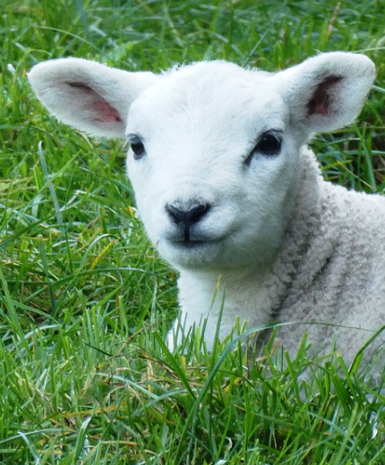
site accompagné de musique 🎼 audios vidéos
sur ce site, diverses considérations sur divers Musiciens.
De plus, diverses pages de ce site s'accompagnent d'extraits musicaux
Sur ce site, j'ai mis diverses situations, ou divers cas, en face de textes de théologie. En particulier des textes du livre du Ciel, un livre attribué à
Sur ce site internet, il devrait se trouver diverses considérations de ma part, sur du moins une partie de la société.
de la psychologie
de la philosophie
ψ
φ
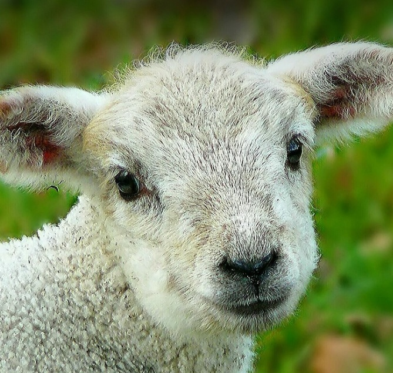
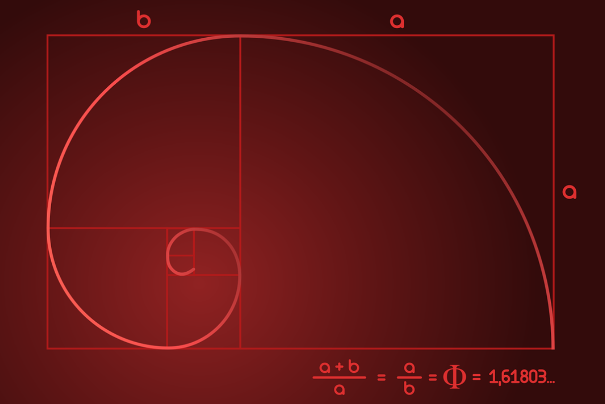
Une représentation de phi, le nombre d'or
site accompagné de µsique 🎼 audios vidéos
sur ce site, diverses considérations sur divers Musiciens.
De plus, diverses pages de ce site s'accompagnent d'extraits musicaux
Ω
Différentes manières de voir le monde, de ressentir le monde.
(Différentes manières de voir, de ressentir, le monde, ou sinon le monde, du moins, la société.)
Différents ressentis sur le monde. Préambule
J'eus l'impression qu'il y avait différentes manières de ressentir le monde : celle qui serait plutôt celle des Enfants, celle des Agnostiques, des Athées, des Catholiques, des Philosophes, des Protestants, des Orthodoxes, des Hindouistes, des Bouhhdistes, des Musulmans, etc.
Donc, pour reprendre sur qu'est-ce que ce site, sur ce site, j'évoque quelles sensations furent les miennes, face au monde, mais, globalement, voici, dans le tableau suivant, dans quelle catégorie j'estime me situer :
Tableau de diverses conceptions, diverses sensations/émotions, face au monde, et dans quelle catégorie, j'estime, ce site se situe
Tableau des diverses conceptions et ressentis face au monde et dans quelle catégorie je situe ce site up778.github.io
La société c'est super, youpi
Les Neutres (parfois appelés les Tièdes?)
Les Philosophes
Les Théologiens, les Croyants, ou Ceux en recherche
Ceux/celles qui ne se posent pas, ou quasiment pas, de questions existentielles
Ceux/celles qui se pos(èr)ent des questions existentielles
Ceux/Celles qui croient que la société, c'est super, ou enfin Ceux/Celles qui sont encore impressionné par le monde des plus de 18 ans. Ceux/celles qui globalement se sentent et se sentirent plutôt bien, dans la société.
Ceux/celles qui seraient plutôt neutres par rapport à l'état de la société. Ils/elles purent ressentir des souffrances, de temps en temps, mais ils/elles ne mirent pas en perspective leur état/leurs souffrances avec l'état de la société. Ils ne théorisèrent pas leurs souffrances par rapport à de la sociologie, de la philosophie, de la théologie.
Qui serait concerné?
Ceux/celles qui trouvèrent qu'il y a comme un problème profond, par rapport à l'état de la société. Ceux et celles qui ressentirent qu'il y avait soit un problème théorique avec l'état du monde et/ou qui ressentirent une souffrance existentielle à être dans la société. Ceux/celles qui essayèrent de théoriser ce problème. Mais qui placèrent plutôt la philosophie au dessus de la théologie. Seraient plutôt Agnostiques ou Athées, pas ou peu en recherche, en questionnement, par rapport à une sorte de superpuissance (que certain(e)s appelleraient Dieu).
Ceux/Celles qui ressentirent qu'il y a un problème théorique et/ou qui ressentirent un malaise existentiel par rapport au monde, qui s'interrogèrent et/ou qui crurent en une théologie, ou sinon crurent en une théologie, du moins, s'intérrogèrent sur la théologie/Dieu.
âge concerné / population concernée
Beaucoup d'Enfants, en occident, jusqu'à un certain âge. (Ne serait-ce que parce-qu'ils ont une estime envers leurs Parents.) Beaucoup d'Occidentaux?
Beaucoup, beaucoup, d'Occidentaux? (Puisque beaucoup d'Occidentaux seraient Agnostiques ou Athées et surtout même pas en recherche.) Beaucoup de Filles? Beaucoup de Scientifiques?
âge concerné / population concernée
Les Gens qui sont allés jusqu'à lire une ou des oeuvres de philosophie (par exemple une oeuvre de F. Nietzsche et/ou Hegel et/ou Platon et/ou Aristote et/ou Marx, etc.)
Les Croyants et ceux/celles en recherche (ne croient pas forcément, mais s'ils ne furent pas croyants, du moins ils écoutèrent ou lurent pas mal de théologie et/ou essayèrent de comprendre s'il y avait un Dieu/une superpuissance)
Oeuvres lues, écoutées, films vus. 📕 📖 🎭 🎬 🎞️
N'ont quasiment rien lu/écouté. Ne regardèrent quasiment aucun film documentaire ou historique ou de théologie. Pour les Enfants, ceci peut être compréhensible. N'auront pas eu le temps, encore, de s'intéresser à la philosophie ou à la théologie.
S'ils lurent/lisent des livres papier et/ou livres audio et/ou documentaires/conférences, pas de la philosophie ou de la théologie. Mais plutôt des romans, des mangas, des bandes dessinées, des films de variété, des compétitions sportives.
Oeuvres lues, écoutées, films vus. 📕 📖 🎭 🎬 🎞️
Ils lurent* de la philosophie (Nietzsche, Aristote, Platon, Hegel, Marx, etc.) Auront lus (ou écouté en livre audio) au moins 60 % d'un livre de philosophie, à 40ans, et y auront porté une certaine estime.
*pas sûr que le verbe lire soit à conjuguer ainsi, d'après diverses sources, mais ce me sembla pas mal, comme manière de le rédiger.
- Les Chrétiens ✅, Christianisants ou Ceux qui réfléchissent au Fils - Les Musulmanisans - Les Judaïsants - autres (Hindous, etc.)
C'est dans cette première catégorie, située juste plus haut, que j'estime me situer, sur ce site up778.github.io La recherche tournant surtout autour du Fils, du catholicisme, sur ce site up778.github.io
Musique écoutée 🎵🎶
Pour les + de 15 ans: quasiment pas de musique. Pour les Enfants, musique pour Enfants, (berceuses ou autres musiques)
en général, si musique écoutée, musique de variété et/ou spécialisation dans une musique traditionnelle ou classique
Musique écoutée 🎵🎶
musique de variété, parfois musique classique
musique de variété, musique traditionnelle, musique classique
pourcentage de la population
+ de ?20%? de la population mondiale
+ de ?50%? de la population mondiale.
pourcentage de la population
- de ?20%? de la population mondiale
En occident, un bien plus faible pourcentage de la population (-de 20% de la population occidentale?).
Un assez grand pourcentage de la population, en orient (Musulmans, Bouddhistes, hindous) croiraient en "quelque chose".
on peut être adulte dans mon âge tout en étant des enfants dans le vôtre, ou être puéril dans mon âge en ayant cent ans dans le vôtre. Je ne regarde pas l’âge de votre chair qui meurt : je regarde votre esprit 9 août 1943 cahiers de Maria Valtorta
Que telle ou telle "théorie religieuse" (que ce soit l'islamisme qui dise vrai, ou le catholicisme, ou le protestantisme, ou autre), que telle ou telle théorie soit juste sur l'état du monde, j'eus, aussi quand même, depuis l'enfance, des émotions, un ressenti.
Ma sensation sur la société : parcours général
Préambule / sensation générale sur le monde, ou du moins, la société qui m'entoura/qui m'entoure🆕
Des sensations... et, avec l'âge, de plus en plus, un recul théorique, littéraire, philosophique, théologique...
Pour synthétiser, la sensation de fond que j'eus souvent, par rapport à la collectivité, c'est une sensation que c'était bizarre. La sensation d'un truc désorganisé, bizarroïde, fait de Gens semblants pourtant, pour la plupart, plutôt sûr d'eux mêmes, plutôt sûr d'être là, dans des collectivités, même si ces collectivités, dans leur "organisations", ne me semblèrent pas nettement avoir de sens bien positif:
Par exemple, quel sens de continuer collectivement un système scolaire dans lequel parfois, voire souvent, des petits Garçons ou des petites Filles reçoivent des moqueries sur leur physique, pleurent, s'énervent entre eux, se battent entre eux. Quel sens de continuer ceci? Pourtant, depuis des décennies, des millions de Gens continuèrent sembler naturellement participer à ce système scolaire, et même, n'y aurait-il pas de quoi croire, que Certains semblèrent trouver cette école comme quelque chose de bien, voire d'essentiel, pour leur(s) Enfant(s). Autre exemple: Quel sens d'aller voter de manière si nombreuse pour des Gens qui déjà mentirent, firent de la démagogie, ne semblèrent pas tirer vers le haut une population. Pourtant, des millions de Gens, depuis des décennies, continuèrent naturellement de participer à une (ou des ) élections, comme si c'était quelque chose de bien, voire d'essentiel.
Système scolaire, systèmes politiques, systèmes professionnels, depuis l'enfance, progressivement, tout ceci dut m'apparaitre m'apparaitre comme chaotique, bizarre. Ce n'est pas que j'estime que le groupe, la sensation de groupe serait forcément négative, et même, au contraire, c'est peut-être bien parce que j'ai une estime pour la collectivité, que je ne dus supporter l'état dans lequel je la ressentie, cette collectivité, l'état dans lequel elle m'apparue.
pour agrandir/diminuer la taille de l'image avec le scroll de la souris : shift+mousewheel ou alt+mousewheel
Enfance, adolescence, puis suite: mon ressenti sociétal à travers divers âges
Enfance : surtout des sensations.
son de vent : dès l'enfance, qu'est-ce que c'était que cette société / ce monde?
À l'enfance, excepté le cadre familial, l'essentiel de mon contact avec des groupes Humains, passait par l'école. Et le système scolaire me laissa une sensation bizarre. Dès l'école primaire, je dus avoir comme un ressenti que quelque part, il y avait, au moins un truc qui clochait. Comme la sensation que beaucoup étaient impliqués dans ce système scolaire, mais... quel était le sens de ce système? en quoi c'était bien ce système? Pourquoi continuaient-ils ce système? Qu'y avait-il besoin de se mettre à plusieurs pour apprendre quelque chose?
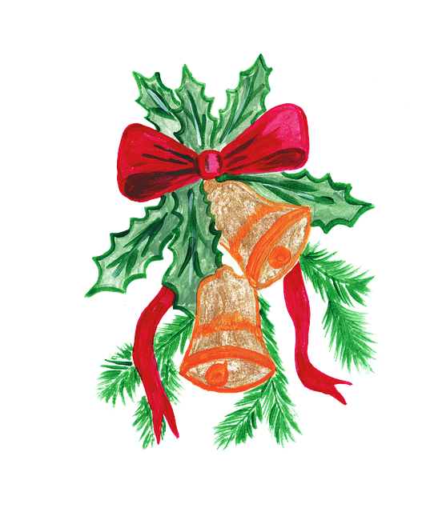
son de cloche
Et jusqu'à maintenant, j'eus cette sensation
que beaucoup d'Humains étaient impliqués dans des systèmes qui clochaient. Dans ce site internet up778.github.io,
, j'essaye d'explorer qu'est-ce que représente / représenta le système scolaire, du moins en occident. Je développe, bien plus que sur cette page d'accueil, ce que me semblerait représenter le système scolaire occidental. En partie du moins, je fis une recherche en fonction de divers écrits théologiques. J'essaye de comprendre si oui ou non, il y a, s'il y eut une aura démoniaque au dessus de ce système scolaire.
Donc dès l'enfance, au moins parfois, j'eus la sensation que ceci me sembla clocher, et petit à petit ce n'est pas simplement l'école qui dut me sembler clocher, mais de plus en plus, toute une partie de ce qui se passait dans la société. Ne serait-ce que parce que déjà, la plupart des Gens plaçaient leurs Enfants à l'école. Alors comment déjà ne pas faire l'association que puisque la plupart des Gens plaçaient leurs Enfants à l'école et que l'école me semblait quelque chose déjà d'assez étrange, comment ne pas concevoir aussi que chez ces "adultes", il y avait peut-être bien aussi chez eux, quelque chose qui clochait. Ainsi, dès l'enfance, je dus avoir, petit à petit, comme un malaise, une mésestime, une incompréhension progressive pour ce monde "adulte". Un monde "adulte" qui m'apparut aussi comme plus ou moins étrange.
Mais j'en viens maintenant à l'adolescence.
Ma sensation de la société - Adolescence
Avec l'adolescence, la sensation d'une société de moins en moins estimable
Au collège , ma sensation parfois d'être dans une société étrange, continua. Comme une sensation que beaucoup me semblaient déterminés de faire durer un système scolaire qui de base pouvait me sembler en partie une anomalie. Quelque chose qui relevait de l'impasse. Pourquoi nous mélangeait-on ainsi? Pourquoi aussi mélanger Filles et Garçons. J'ai aussi songé davantage à la politique, à l'âge du collège / lycée. Et comme pour le système scolaire, il devait me sembler y avoir quelque chose d'étrange dans le comportement des Gens face au vote, aux élections, à la politique. Comme parfois la sensation d'un troupeau qui allait dans une direction assez incompréhensible. Un troupeau qui se faisait parfois grignoter une partie des siens par tel ou tel carnassier, mais un troupeau qui continuait, malgré tout, à emprunter les mêmes chemins, les mêmes impasses. Comportementalement, comme la sensation d'une société qui avait quelque chose de négativement féminin (je conçois qu'il puisse y avoir aussi un féminin positif). Une sensation qui dura encore jusqu'à présent.
Vers 15/16ans, première confirmation littéraire d'ampleur à mon malaise : une partie de la philosophie : en particulier l'écrivain W. Friedrich Nietzsche
Plus tard, plutôt en fin d'adolescence, dans cette ambiance scolaire/sociétale plus ou moins étrange, pénible, j'ai commencé à lire divers livres de W. Friedrich Nietzsche.
(Dans cet extrait audio, "J'ai trouvé dans les livres", je dirais plutôt, dans certains livres.)
Et Friedrich Nietzsche, lui aussi, me sembla concevoir que ceci clochait🔔, dans la société (déjà au XIXème siècle, du temps où il aurait rédigé ses livres). Et pour Friedrich Nietzsche aussi, il me sembla que selon lui, ceci ne clochait pas simplement sur des détails. Mais davantage à la racine. (Voici un extrait d'Ainsi parlait Zarathoustra (un des livres attribués à Friedrich Nietzsche): "Il y a quelque part encore des peuples et des troupeaux, mais ce n’est pas chez nous, mes frères : chez nous il y a des États. État ? Qu’est-ce, cela ? Allons ! Ouvrez les oreilles, je vais vous parler de la mort des peuples. L’État, c’est le plus froid de tous les monstres froids
de la nouvelle idole, "Ainsi parlait Zarathoustra"
) Ce n'est pas que je considèrerais que l'"État" serait forcément quelque chose de négatif, juste parce-que ça s'appellerait "État", et je considère bien qu'il y eut/a aussi dans cet État des Gens qui travaillent, des Gens qui eurent une certaine bonté. Mais il y aurait "État" et "État".. Et j'aurais de quoi me demander si depuis la révolution française, au dessus de cet "État", il y aurait une aura démoniaque. Sur ce site up778.github.io, dans la
page Créatures à l'étude, partie Friedrich Nietzsche
, je développe mon parcours / point de vue, par rapport à l'écrivain Friedrich Nietzsche. Je ne fus pas d'accord avec plusieurs parties qu'écrivit Friedrich Nietzsche. Il me sembla y avoir en lui trop d'extrémisme, voire des erreurs sur le catholicisme. Mais au moins, Friedrich Nietzsche me sembla avoir cette nausée sociétale, de base. Ce détachement assez profond. Ce ras-le-bol🥣. De plus, sa manière d'avoir existé, aussi, dut m'impressionner et dut me donner une estime pour son oeuvre, et lui-même.
Mon ressenti sur la politique, ''l'égalité'', les valeurs républicaines'' / Un soi-disant monde égal
En ce qui concerne la politique, les "valeurs républicaines", depuis l'adolescence, si ce n'est même l'enfance, cette prétendue égalité dut me sembler fausse. Ces "valeurs", quelque chose de faux. Ne serait-ce car j'estime que les Humains ne seraient évidemment pas égaux. Ces "valeurs républicaines", des expressions telles que "égalité liberté fraternité", durent me sembler comme une sorte de tambouille. Quelque chose de pas clair, d'embrouillant, et même, si je devais parler en termes théologiques, je dus avoir comme la suspicion que de ces mots/expressions émanait quelque chose de ténébreux, voire maléfique. En fait, si le monde est sous influence démoniaque, alors il me semblerait logique qu'une partie du langage, que certains mots soient aussi entachés de cet aspect démoniaque/ténébreux : un monde sous influence démoniaque ➡️ diverses valeurs de ce même monde empreintes de quelque chose de "démoniaque".
Une égalité tout court? Une égalité en droit? Une égalité dans le monde judiciaire?
Certains diraient peut-être que dans "égalité-fraternité-liberté", "égalité" ne signifierait pas que nous serions égaux dans le sens ou nous pèserions tous le même poids, ou dans le sens où nous aurions tous la même taille/hauteur. Ils considéreraient que cette égalité serait une égalité en droits. Mais : - Déjà en quoi Quelqu'un(e) pourrait savoir, simplement en lisant "égalité, liberté, fraternité", que ceci signifie égalité en droits, plutôt qu'égalité tout court? Déjà pour certains français, ce ne doit pas être évident, mais alors pour des étrangers qui viendraient en france, comment sauraient ils, à première vue que dans l'expression "égalité, liberté, fraternité", le mot "égalité", signifie égalité en droit, plutôt qu'égalité tout court? - De plus, si tant est que dans cette expression "égalité-fraternité-liberté", "égalité" signifierait égalité, alors même "en droits" en quoi serions nous égaux? En quoi 2 personnes jugées pour un cas à peu près similaire (par exemple un cambriolage), recevraient les mêmes jugements, si l'une des personne est jugée par un(e) juge qui lui donnerait telle ou telle montant d'amende et un autre cambrioleur, tel autre juge lui mettrait tel autre montant avec tel ou tel durée de sursis ou de prison ferme. En quoi y aurait-il eut-il eut égalité.
Une égalité dans les capacités de chacun?
En réalité, il me sembla, que, depuis des millénaires, par exemple, de grands compositeurs de musique (par exemple Mozart), ou de grands artistes, ou Auteurs, ou philosophes ou théologiens, il y en eut relativement peu. Et ce système prétendument égalitaire serait en réalité particulièrement faux / hypocrite : en réalité, contrairement à cette prétendue égalité, certains vont vers diverses grandes âmes rares, de grandes oeuvres, telle ou telle situation matérielle, tout en prétendant un système égalitaire.
pour agrandir/diminuer la taille de l'image avec le scroll de la souris : shift+mousewheel ou alt+mousewheel
Est-ce que je serais pour autant pour l'égalité dirigeants/peuple? Pas forcément. J'estime qu'il puisse être adapté que tel ou tel dirigeant puisse disposer différemment des autres de tels ou tels moyens matériels. Le problème, dans cette "démocratie" actuelle (2024) c'est qu'ils prétendirent l'égalité alors qu'il ne me sembla pas y en avoir. Autrement dit, j'eus comme l'impression qu'il y eut hypocrisie, mensonge. Un mensonge plutôt à même de donner de la frustration, de la peine, un désamour, plutôt que de la joie, de l'estime.
pour agrandir/diminuer la taille de l'image avec le scroll de la souris : shift+mousewheel ou alt+mousewheel
Une égalité entre âmes, ou une âme au centre de la Création? : un extrait du livre du Ciel, et quelques considérations
Concernant savoir s'il y aurait égalité des âmes ou une âme au centre de la Création, voici un extrait du livre du Ciel (un livre, pour grande partie, qui aurait été dicté par le Fils à Luisa Piccarreta) :
Citation, prétendument de Dieu
20 octobre 1931, le livre du Ciel [...] Toutes les Créatures devraient former, unies entre elles, le centre de notre Amour manifesté. Mais beaucoup se sont éloignées du centre. Notre amour est resté suspendu, sans avoir sur quoi se fixer -pour accomplir son dessein premier, la raison même de sa sortie. Mais l’ordre de notre sagesse, la vie active de notre amour manifesté ne pouvait tolérer l’échec de notre dessein. Tout au long des siècles, il y a toujours eu une âme que Dieu a formée comme centre de toute la Création. C’est en elle — que notre Amour s’appuyait et — que notre Vie battait et atteignait le dessein de toute la Création. C’est au moyen de tous ces centres -que la Création est maintenue et — que le monde existe encore. Sinon il n’aurait plus de raison d’exister. Car il lui manquerait la vie et la cause de toute chose. Il n’y a donc pas eu et il n’y aura jamais de siècle où nous ne choisirons pas des âmes chères, plus ou moins importantes, - qui formeront le centre de la Création et -en qui nous aurons notre Vie qui palpite et notre Amour à l’œuvre. Selon les époques, les temps, les besoins et les circonstances, -elles ont été offertes pour le bien et la défense de tous, et — elles seules ont soutenu mes droits sacro-saints et m’ont offert le champ où maintenir l’ordre de mon infinie Sagesse. Or tu dois savoir que ces âmes ont été choisies par notre Être divin en chaque siècle comme centre de la Création — selon le bien que nous voulions faire et faire connaître, et aussi — selon les besoins des centres éparpillés, d’où la diversité de leurs actions, de leur parole et du bien qu’elles ont fait. Mais toute la substance de ces âmes était ma Vie palpitante et mon Amour manifesté à l’œuvre en elles. Nous t’avons choisie en ce siècle comme centre de toute la Création afin de faire connaître — le grand bien avec plus de clarté et -ce que signifie faire notre Volonté pour que chacun puisse la désirer et appeler son Règne. Afin que les centres dispersés puissent — se réunir en ce centre unique et -n’en former qu’un seul. La Création est une naissance issue par la Puissance de ma Volonté divine. Il est juste et nécessaire que tous reconnaissent -qui est cette Mère qui avec tant d’amour leur a donné le jour afin que tous ses enfants puissent être unis à la Volonté de leur Mère. Ayant une seule Volonté, il sera facile de former un centre unique où cette céleste Mère fera palpiter notre Vie divine et notre Amour à l’œuvre. D’autant plus que le vice prédominant de ce siècle, l’idole d’un grand nombre, est le vouloir Humain, même dans le bien qu’ils font. C’est pourquoi l’on voit que de l’intérieur de ce bien sortent bien des fautes et des péchés. Cela montre que la source qui les animait n’était pas pure, mais vicieuse. Parce que le vrai bien sait produire de bons fruits. C’est à cela que l’on sait si le bien que l’on fait est vrai ou faux. Il y a donc une extrême nécessité de faire connaître ma Volonté divine, -lien d’union, -puissante arme de paix, -bienfaisante restauratrice de la société Humaine.
Qui furent ces âmes au centre de la création? à travers les siècles. Quelques pistes/hypothèses de ma part : - Les prophètes et grandes figures de l'ancien testament. (Entre autres Abraham, Moïse) - La vierge Marie - Divers pères de l'Église - Diverses grandes figures du catholicisme (Hildegarde de bingen, Thérèse d'avila, entre autres) - Luisa Piccarreta - Qui aurait été entre Luisa Piccarreta et maintenant? - Qui maintenant? sur environ 8 milliards d'âmes, actuellement, une âme au centre de la Création? Qui? Le futur Mahdi, Machia'h, grand Monarque?
Deuxième confirmation d'ampleur à mon ressenti que quelque chose cloche/clochait sociétalement : la théologie
Surtout quelques années après l'adolescence, j'ai parcouru pas mal d'oeuvres du catholicisme. Là aussi, j'ai retrouvé cette sensation que souvent, le Fils (ou du moins, Le Fils, prétendument) exprimait que ceci clochait, avec beaucoup d'Humains, sur cette planète. Le Fils aussi, il ne me sembla pas qu'il évoquait que ceci clochait simplement sur des détails, mais plutôt il exprima que ceci clochait grandement. La plupart des Humains, en eux-mêmes, n'allaient pas.
En fait quelle fut la sensation que j'eus, maintes fois, depuis l'enfance : c'est qu'il y avait quelque chose qui clochait. Et cette sensation-ci, il me sembla que c'est celle qu'aurait eues divers(e)s Mystiques, divers(e)s Mystiques auxquel(le)s le Fils aurait parlé. Cette sensation de malaise que j'eus, cette sensation reçue comme une confirmation, une consolidation, à l'écoute/lecture de divers écrits qui auraient été dicté par le Fils à divers(es) Mystiques d'orientation catholique (Luisa Piccarreta, Maria Valtorta, Catherine de sienne, etc).
Je ne sais pas s'il existe un Dieu, ou un diable, ou l'enfer, ou le purgatoire, mais beaucoup d'éléments me porteraient maintenant, à l'âge que j'ai, à avoir la sensation que l'interprétation du monde la plus élevée, adéquate, pour comprendre ce monde, c'est la théologie catholique. Ce serait la théologie catholique, la plus à même de refléter qu'est-ce qui se passe dans ce monde, quel fut le problème de fond que je ressenti, sans forcément avoir, à l'enfance ou à l'adolescence, le vocabulaire pour l'exprimer.
La manière de voir le monde d'après le Fils, à travers des dictées à divers(es) Mystiques
Sur ce site up778.github.io, c'est surtout des citations de Luisa Piccarreta et de Maria Valtorta que j'ai exposé. Concernant les dictées/écrits de Maria Valtorta, j'ai quelques doutes quand même, ne serait-ce que parce qu'à un moment, il est évoqué dans une de ses dictées, qu'il existerait des Extra-terrestres, et ceci ne me fut pas évident à croire à 100%, tout de même. Ne serait-ce qu'à ce niveau, je garde un doute, pour ce passage de Maria Valtorta.
Pour le Fils aussi, un(e sensation de) ras-le-bol de beaucoup d'Humains/Humanoïdes
Face
Image d'une marre
à ce monde, parmi les rares qui considérèrent qu'il y en avait marre de beaucoup d'Humanoïdes/Humains, et pas simplement de telle ou telle ethnie, (comme il me sembla que ce fut le cas chez certains suprémacistes, qui trouvèrent qu'il y avait des problèmes seulement à cause de telle ou telle ethnie), mais qu'il y en avait marre de la plupart des Humains/Humanoïdes, parmi les seul(e)s qui comprirent ceci à un certain niveau, et bien il me sembla qu'il y eut diverses figures du catholicisme, dont, en particulier, j'estime, diverses Filles alitées, comme par exemple,
(mais il y aurait eut aussi Catherine de sienne et des dizaines d'autres, mais Luisa Piccarreta et Maria Valtorta me semblèrent parmi les plus récentes et elles laissèrent des œuvres de milliers de pages). N'aurait-ce pas justement été aussi parce que le Fils considéra que c'était parmi les Créatures les plus aimables, qu'il se serait adressé tout particulièrement, et longuement, à elles? (Et pas à d'autres, d'ailleurs.) Luisa Piccarreta ou Maria Valtorta ou d'autres alitées, en auraient eu "marre", au point de ne plus sortir de chez elles et d'attendre souvent une chose : être réunies à Dieu.
Le message ((ou les messages, diraient certain(e)s), messages exposés sur des milliers de pages à travers le livre du Ciel, ou les cahiers de 1943 à 1947 de Maria Valtorta, me semblèrent une compréhension, un point de vue sur le monde (ou, du moins un point de vue sur la société), une compréhension qui me sembla beaucoup plus belle, vivante, correspondante à ce que me sembla la réalité, une compréhension beaucoup plus vraie qu'une "compréhension" du monde (actuellement répandue) qui serait de dire que nous serions tous "égaux", pareils, "égalité, liberté, fraternité", que tout irait bien puisque nous aurions le sport, la matérialité, la "démocratie", les jeux olympiques. Non, en fait, il y aurait, de base, j'estime, un monde problématique, un monde, sous certains aspects, pas, ou peu, compréhensible, un monde qui put me sembler, à première vue, injuste, et globalement, les messages trouvés à travers des œuvres comme les cahiers de Maria Valtorta, ou le livre du Ciel, me sembleraient une compréhension bien plus porteuse d'espoir, de sens, que l'injustice de l'aspect de ce monde vu à première vue. Par exemple, ce qu'il me sembla, souvent, dans la théologie, c'est qu'il était évoqué, par exemple à Catherine de sienne, ou à Maria Valtorta, ou à Luisa Piccarreta, qu'il y avait pleins d'Humanoïdes qui posaient problème sur cette planète.
De base, comparé à de tellement nombreux égarés, eh bien ces Mystiques, dans leurs écrits, ce fut comme s'il me sembla qu'elles avaient été les rares à avoir bien compris (elles, ou enfin Le Fils ou le Père, en fonction de qui leur "parlait"), elles, que profondément, de base, quelque chose posait problème sur cette planète. (En quelque sorte, les rares à avoir compris qu'il y avait un "loup" (le "diable") quelque part, qu'il fallait faire attention et que ceci n'allait pas). Le restant de la population, ou enfin au moins une partie du restant de la population, je dirais, aussi, compris/comprend/ressenti, parfois, qu'il y a/avait quelque chose "qui clochait".🔔 Mais je dirais, cette part de la population ne le comprit pas autant que ces grandes figures du catholicisme. Pas aussi individuellement, pas au même niveau. Pas la même capacité de théorisation de la situation. Et puis aurait ce même été possible que qui que ce soit fut au même niveau de compréhension de diverses situations, au même niveau de compréhension que le niveau de compréhension émanant de certains passages écrits de diverses œuvres du catholicisme, si l'on considère que certaines de ces œuvres auraient été dictées par Dieu lui-même.
Cette conception qui serait de croire qu'il y a pleins de problèmes dans le monde et avec les Humains/Humanoïdes, je suspecte aussi, demande beaucoup plus de force d'âme que celui/celle qui se ficherait plus ou moins du monde et qui croirait se reposer derrière une conception du monde "bisounours". Eh oui, quelle force d'âme faut-il pour croire/considérer que plus de 90%, voire 98%, des Humains/Humanoïdes de plus de 16 ans, actuellement et depuis des décennies, seraient dans l'égarement, sur terre. Pas le même poids à porter que celui/celle qui se "reposerait", ou plutôt croirait se reposer, sur une conception bisounours et/ou une conception d'égalité. Quelle force d'âme, quelle conditions d'existence. À porter autant, pourrait-on encore exister comme la plupart des autres, au sein de la société.
La manière d'avoir existé de ces Mystiques et la crédibilité que cette existence me sembla leur donner
Le mode de vie de divers saint(es) de l'Église catholique, de diverses Mystiques, dut être un élément qui me donna une suspicion vis-à-vis d'elles/eux, que j'avais de quoi avoir une estime, pour eux, et que leur oeuvre avait peut-être une crédibilité. Que la plupart de ces saints, saintes, à travers les siècles, cherchaient autre chose, une issue de secours, qu'ils aient essayé d'exister à l'abri de la société les environnant (à l'abri, entre autres exemples de ces abris : des couvents, des monastères, ou alités dans une relative solitude), que ces Créatures aient comme essayé de se protéger d'une société plus ou moins immature, se protéger des "affaires du monde", déjà, de base, ce comportement, cette "névrose", ce "dégout", ce "ras-le-bol", ceci dut m'attirer, attiser chez moi une certaine curiosité, une certaine estime. Un mode de vie qui me sembla souvent avoir été une relative solitude. Une solitude relative, car fut-ce vraiment une solitude? Dieu ne fut-il pas toujours là?
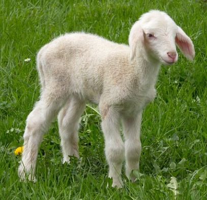
Cette considération qu'il serait toujours là, malgré même une apparente absence physique, c'est ce qui me sembla souvent émaner du livre du Ciel.
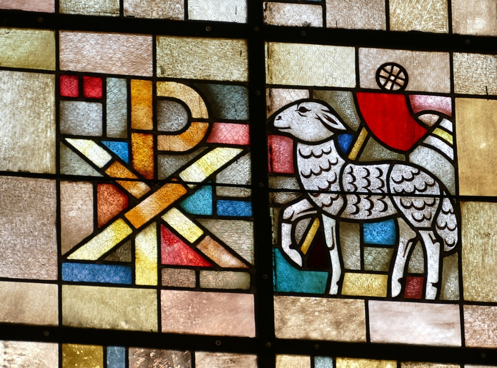
Souvent, le Fils, évoqua à Luisa Piccarreta que malgré la sensation que Luisa Piccarreta eut qu'il n'était plus là, Le Fils lui évoqua qu'il était toujours là. Alors pour ces "névrosés", une solitude physique, oui, mais comme beaucoup de diverses grandes figures du catholicisme (si ce n'est toutes) écrivirent, ces figures eurent tout de même une compagnie, en quelque sorte, un lien aussi avec autrui, une communication avec le monde, et peut-être même d'ailleurs beaucoup plus que la moyenne des autres gens, ne serait-ce que si l'on considère que leurs œuvres furent ensuite reçues à travers de nombreux autres Gens et souvent sur plusieurs générations. Alors ne fut-ce que pour ceci, j'aurais de quoi estimer que leur solitude fut assez relative. En fait, depuis des années, ce qui dut me sembler assez probable, c'est que quand une âme atteint un certain niveau de sensibilité, du moins à travers les siècles passés, elle ne put plus vivre en société comme la plupart le firent. Comme si la différence de sensibilité était trop importante. N'en aurait-il pas été ainsi, par exemple, pour Blaise Pascal, ou Luisa Piccarreta ou Maria Valtorta, ou même la plupart, si ce n'est tous les alités du catholicisme? Pour le reste de la population, le restant qui n'aurait pas été particulièrement dans un processus religieux et qui aurait aussi été dans une relative solitude, certes, je conçois que certaines gens, un certain pourcentage de la population, fut relativement introverti, solitaires, dans leurs existences. Mais avec diverses de ces grandes figures du catholicisme, cette solitude me sembla avoir pris une autre ampleur, un autre sens. Le degré de solitude ne fut en général pas le même, et aussi, voire surtout, cette solitude fut relativement volontaire. (Car je puis imaginer que certain(e?)s battirent "des records" de solitude à vivre (ou vivoter?) ici ou là, sur terre, sur une île déserte ou autre endroit retiré, pendant des années. Mais cette solitude d'île déserte, que vaudrait elle, par rapport à celui/celle qui aurait eut bien davantage le choix ou non de vivre/vivoter en société, et qui aurait préféré une solitude? (une solitude plutôt assez extrême : seul ou dans une relative solitude, ou une solitude plus relative : en couvent ou monastère))
Le libro di Cielo (livre du Ciel) (Le Fils / Luisa Piccarreta)
Le livre du Ciel? Qu'est-ce que ce livre? Un livre qui aurait été dicté par Dieu lui-même, à une italienne, une italienne la plupart du temps alitée (c'est-à-dire qu'elle restait la plupart du temps au lit), il y a environ un siècle (à la fin du XIXième siècle et au début du XXème siècle). Un livre de quelques milliers de pages.
Une de mes hypothèses/compréhension du comportement de Dieu, pour ce livre, c'est qu'il aurait dicté qu'est-ce que ceci ferait si les gens essayaient de respecter les "lois de Dieu". (Entre autres, les dix commandements.) En fait, ceci aurait fait des millénaires que la plupart des Humains/Humanoïdes auraient été plus ou moins dans l'apostasie (c’est-à-dire la mise de côté de Dieu), à tel point qu'à un moment, et parce qu'aussi les temps auraient été mûrs, Dieu serait venu pour dire/dicter : voilà ce que ceci ferait si vous arrêtiez de faire "n'importe quoi" : voilà dans quelle richesse vous seriez. Et sur des centaines de pages, il aurait expliqué ce que ceci ferait.
Ce n'est pas que j'estime avoir une préférence forte pour ce livre du Ciel, par rapport à d'autres œuvres de théologie. Mais cette non-préférence vient aussi peut-être que c'est un livre, une lecture relativement profonde, "difficile", volumineuse (quelques milliers de pages) et j'estime qu'il y a peut-être un "un temps de maturation" et qu'au bout d'un moment, j'en arriverais peut-être à placer tout de même cette œuvre au-dessus des autres œuvres du catholicisme. À la ressemblance de la musique classique: peut-être à un certain âge, la plupart ne sont pas prêts, avec cette musique, mais après une certaine maturation, certain(e)s redécouvrent en eux-mêmes la valeur relative de la musique classique. Mais quel que soit mon ressenti actuel sur ce livre, il y aurait peut-être bien un Dieu, et il aurait fait valoir l'importance de ce livre dans la transition deuxième fiat/ 3ème fiat. (qu'est-ce que seraient ces "fiats" : le 1ᵉʳ fiat aurait été du commencement de la création jusqu'à ~l'an 0 et la première venue du Fils sur terre, 2ème fiat = de l'an ~0 jusqu'à l'an ~2000, 3ème fiat : de l'an ~2000 et après (à moins que le troisième fiat ait déjà commencé vers le début du XXème siècle, avec Luisa Piccarreta?)). (Je remettrais peut-être ici plus tard un ou des extrait(s) du livre du Ciel où ceci aurait été Dieu qui aurait fait valoir l'importance de ce livre pour la transition deuxième fiat, troisième fiat). Quoiqu'il ne s'agisse peut-être pas non plus pour moi de hiérarchiser ces œuvres catholiques les unes par rapport aux autres. Non seulement il n'y aurait peut-être même pas à faire de hiérarchie entre diverses œuvres du catholicisme, s'il s'agit de complémentarité plutôt que de hiérarchie : le Livre du Ciel aurait son "rôle" à jouer pour cette époque en particulier, mais ce pourrait peut-être même être négatif que de hiérarchiser. Négatif car ceci pourrait peut-être inciter certain(e)s à se diriger prioritairement à aller vers certaines œuvres, alors que pour eux/elles, il serait plus adapté qu'ils aillent d'abord vers une œuvre plutôt qu'une autre.
Depuis en particulier quelques années, j'ai lu (ou écouté en livre audio) ce livre du Ciel, attribué à Luisa Piccarreta et au Fils. Dans ce livre, au niveau de qui parle (ou plutôt dicte), un style tout à fait particulier et que j'ai retrouvé à moindre mesure dans le coran et dans le judaïsme (dans le coran ou le judaïsme Dieu aurait parlé, pas aussi longuement : par exemple quand ceci aurait été Dieu qui "parla" à Moïse pour les tables des commandements, ou Dieu pendant l'épisode du buisson ardent, ou à divers prophètes). Mais un seul Dieu (ou du moins "Quelqu'un" qui se serait prétendu tel) et qui dicte à une seule Créature sur des milliers de pages... Il ne me semble pas avoir trouvé beaucoup d'œuvres où ce serait directement Dieu qui "parla" à une même Créature, sur des milliers de pages. Il y aurait tout de même eu Maria Valtorta (une "Mystique" italienne), avec les dictées qu'elle reçut de 1943 à 1950. À Moïse, au moment du buisson ardent, Dieu lui aurait "parlé" (le verbe parler aurait-il encore un sens quand il s'agit de Dieu) sur quelques? heures? ?jours? Avec Luisa Piccarreta ou Maria Valtorta, sur des années, il se serait adressé à elles, en général, à quelques jours d'intervalle, et elles en rédigèrent des œuvres de plusieurs milliers de pages.
Agnus Dei, attribué à W.A Mozart
Ce qui dut m'apparaitre assez vrai, dans le livre du Ciel (qui aurait été rédigé par
), c'estque le Fils, ou en tout cas le Fils supposé, qui serait le communicant principal du livre du Ciel (principal, car des fois il y aurait eu, entre autres, la vierge Marie), eh bien, il trouva qu'il y avait, lui aussi, pleins de problèmes, avec beaucoup d'Humains/Humanoïdes, énormément de Créatures égarées. Et ce style-ci, cette considération qui est qu'il y aurait de nombreuses difficultés avec beaucoup d'Humains/Humanoïdes, ceci me sembla donner de la plausibilité à cette œuvre.
Mais attention ⚠️, il n'y a pas que de trouver qu'il y aurait "plein de problèmes", qui me suffirait à ce qu'une œuvre me semble avoir de la plausibilité/crédibilité dans ce qu'elle dit. Ne serait-ce que parce que Quelqu'un d'assez méchant/strictement sarcastique, pourrait aussi passer beaucoup de temps à dire/trouver qu'il y a plein de problèmes. Avec ce livre du Ciel, attention, certes Il se plaint, mais il y a - de quoi Il se plaint et - il y a aussi de l'espoir, de l'amour. Donc au moins deux différences, avec certains livres dans lesquels aussi il y a des plaintes: Dans ce livre du Ciel, - la nature de la plainte, qui est parfois le manque d'amour/attention des Humains/Humanoïdes envers Dieu (alors que dans d'autres livres, il y a "beau" y avoir des plaintes, une prise en compte de divers problèmes, il n'est pas forcément fait référence à Dieu. Lorsqu'il y a plainte, ce n'est pas forcément une plainte qu'il y aurait un manque d'attention envers Dieu). - Une autre différence aussi, c'est qu'il y a de l'espoir, et que malgré que Dieu se plaigne des Humains/Humanoïdes, il leur laisse quand même l'espoir du pardon, l'espoir d'avoir une richesse si tout de même ils se reprennent. (Alors que dans d'autres livres de plaintes, les plaintes impliquent strictement punition, sentence.)
Pourquoi ce livre du Ciel aurait-il une importance, du moins pour certain(e)s. Même par rapport à beaucoup d'autres ouvrages théologiques :
Parce qu'il y aurait peut-être bien un Dieu et que ce serait ce même Dieu qui aurait fait valoir que ce livre serait central dans la transition deuxième/troisième fiat. (Je n'exclus pas pour autant que d'autres livres religieux aient aussi leur "rôle à jouer", une complémentarité à "jouer", dans cette transition deuxième fiat, troisième fiat.)
Et toi, ma Fille, tu es également particulière devant Moi et devant l'histoire. Il n'y a pas eu d'autres Créatures avant toi et il n'y en aura pas après toi qui, par nécessité, aient été pourvues à ce point de l'assistance de mes ministres. Je t'ai choisie afin de déposer en toi les actes de ma Volonté suprême. Il était approprié, en vertu de la Sainteté de ma Volonté, que certains de mes ministres t'accompagnent et soient dépositaires -des grâces que comporte ma Volonté, pour ensuite les communiquer au reste de l'Église. 11 juillet 1923 -Tome 15-
30 octobre 1924 livre du Ciel Quand Dieu décide quelque chose, rien ne l'arrête Il demeure inébranlable dans son Immutabilité.
Un extrait de ce livre du Ciel Ce que J'ai décidé, personne ne peut s'y opposer. Les siècles peuvent s'écouler mais, -tout comme la Rédemption a été réalisée, -l'homme va revenir dans mes bras tel que prévu lors de sa création. Pour ce faire, J'ai dû d'abord choisir celle qui serait la première à vivre dans ma Volonté Éternelle, -la lier à toute la création, et -vivre avec elle sans séparation de nos volontés, sa volonté et la nôtre ne faisant qu'un.
Impopularité de l'oeuvre de Luisa Piccarreta et de celle de Maria Valtorta
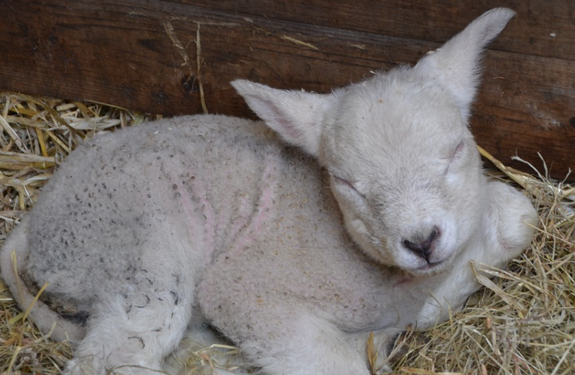
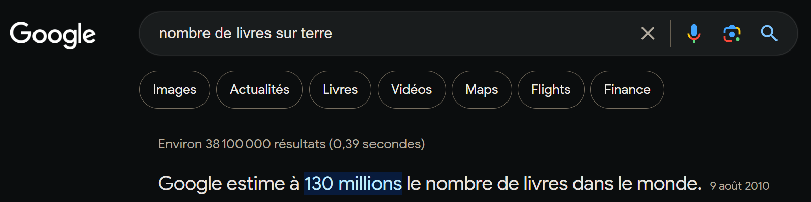
S'il se trouve qu'il y a un Dieu et que ce fut lui qui dicta (pour majeure partie) le livre du Ciel, et les cahiers de Maria Valtorta, alors il y aurait encore actuellement un grand décalage entre l'importance de ces œuvres mystiques du catholicisme (œuvres rédigées par des "Mystiques" (Luisa Piccarreta et Maria Valtorta)) et leur méconnaissance, en général : Par rapport à des millions de livres de différents Auteurs sur terre, ces livres "mystiques", en terme de valeur théologique tiendraient les premières places, (et pour le livre du Ciel ce serait même la première place?), pourtant, jusqu'à encore récemment (année 2022), ces livres auraient été peu lu, quasiment pas connus…
D'où vint le malaise/ras-le-bol? ce ''brouillard''? d'après le livre du Ciel : de l'irrespect d'un Dieu
S'il se trouve qu'il a existé, et qu'il existe encore un Dieu, ou enfin une superpuissance, tel que dans la partie de droite🔆, du schéma plus haut, alors, puisque Dieu serait actuellement fortement mis de côté par la plupart des Gens (que ce soit en occident, mais aussi en orient, car même si en orient ils me semblèrent moins mettre de côté Dieu, ils n'auraient pas le bon Dieu (s'il se trouve que le bon Dieu serait la Trinité)), alors j'aurais de quoi, pour le moins, suspecter, qu'il y ait, actuellement (en 2024 et d'ailleurs, aussi, depuis des siècles, voire des millénaires), sur terre, il y aurait comme une "possession démoniaque", un "nuage démoniaque", sur beaucoup de domaines, dans la société : à l'école, en général, dans les milieux professionnels en général, dans la société en général. Comme une "aura démoniaque" qui recouvra, pour le moins beaucoup de domaines, sur terre.
Une problématique de cette conception de la société, située à gauche, sur ce schéma💨
Une citation concernant cette conception "soleil" 🔆, située au milieu, sur le schéma situé normalement juste plus haut
Un problème de ce type de société actuelle, (une société qui pourrait être la société occidentale actuelle, j'estime), située sur le schéma plus haut, à gauche, cette "société de l'égalité" (voire de l'indistinction), j'estime, c'est que type de société pourrait faire perdre du temps à la Créature, pour se rapprocher de Dieu. Non seulement, ce type de société agnostique et/ou athée pourrait faire perdre du temps à la Créature, mais même, ce modèle de société peut faire perdre à la Créature, la notion, ou l'hypothèse, qu'il existerait un Dieu. Ce type de société "égalitariste" pourrait faire aller la Créature vers des "puissances démoniaques": Dès l'enfance, la plupart des enfants sont placés en
et ce que pour le moins, je dus suspecter, c'est que ce mélange d'âmes, que j'ai estimé souvent mal organisé, à l'école, pourrait déjà, dès l'enfance, salir, égarer, beaucoup de Créatures. Ce mélange, mélange des âmes qui plutôt relativement proches de Dieu, avec d'autres âmes moins proches. Indistinguer les Créatures les unes des autres et leur apporter divers "démons".
Ma Fille, regarde avec quel amour J’aime la Créature. Avant qu'elle voie la lumière terrestre, elle est déjà dans mon sein Quand elle voit le jour, Je ne la quitte pas Un rayon de lumière portant ma Vie l'accompagne sans cesse -pour la pourvoir de tout ce qui est nécessaire à sa croissance. Avec quel soin Je veille à cette croissance ! Avec quel amour Je l'arrose ! Je me fais Moi-même Lumière, Chaleur, Nourriture et Défense pour elle. Et quand son temps sur la terre est terminé, Je la fais venir dans mon sein par la voie de ce même rayon afin qu'elle puisse se délecter dans sa céleste Patrie. Mon amour fait plus pour la Créature que le soleil que J'ai formé dans le ciel azuré au bénéfice de l'humanité : ce soleil n'est que l'ombre de mon vrai Soleil. [...] 17 octobre 1924, le livre du Ciel. Prétendument le Fils, à Luisa Piccarreta.
D'après le livre du Ciel, qui aurait véhiculé cette ''aura démoniaque'', qui l'aurait portée? Qui continuerait à prolonger les ténèbres sur le monde?
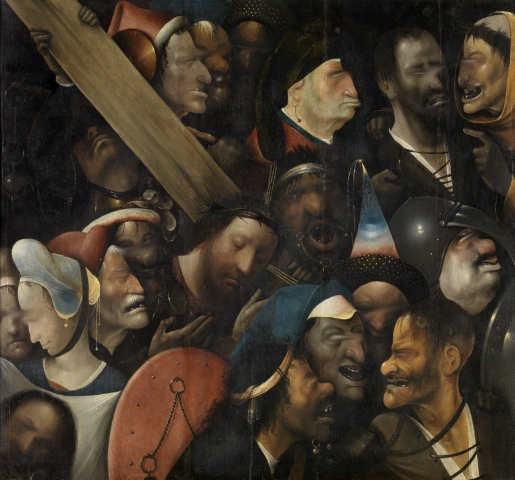
Le Porteur Les Porteurs Extrait d'un tableau de Jérome Bosch.
Porteur et Porteurs.
Une "aura démoniaque", un malaise, qui serait venu, de base, des plantes? 🌿 et/ou du climat? ⛅ du réchauffement climatique? et/ou des animaux?🐢 des virus?🦠 des microbes? Eh bien de base, non. Dans le livre du Ciel, j'eus l'impression que ce seraient des Humains/Humanoïdes, que seraient venus les problèmes. Le véritable porteur des problèmes, aurait été le Fils lors de sa venue sur terre, il y a environ 2000 ans. Ce serait de certains Humanoïdes, et à priori de la plupart d'entre eux, et en particulier ceux qui essayèrent de s'accaparer le monde, qui souhaitèrent faire les choses à leur sauce, en "freelance", ce serait d'eux que seraient venus et d'où viendraient encore tous les problèmes du monde. Tous les problèmes, si je pars de l'hypothèse qu'il y aurait un Dieu et que lui serait parfait. Ce n'est pas que j'estime que la plupart des Humains, Humanoïdes auraient de mauvaises intentions, mais j'estime plutôt que beaucoup d'Humains/Humanoïdes seraient véhicules de problèmes.
Que les problèmes vinrent de divers Humains/Humanoïdes, c'est, il me sembla, ce qui aurait été considéré par Luisa Piccarreta, Maria Valtorta, c'est aussi ce qui me sembla dicté plus d'une fois par qui se serait prétendu Fils, et, entre autres Penseurs, ce qui me sembla aussi considéré aussi par le philosophe Friedrich Nietzsche
Extrait du livre du Ciel - 12 août 1929 Tome 26 Luisa Piccarreta qui commence à "parler", puis le Fils puis un extrait du tome 19, 27 Août 1926
Extrait d'Ainsi parlait Zarathoustra (1883), de Friedrich Nietzsche. Deuxième partie / Des grands événements
Chaque chose portait la marque de la main créatrice de son Créateur. Tout était par conséquent parfait, d’une beauté enchanteresse. Chaque chose créée était animée d’une lumière brillante, - soit de par sa nature reçue de Dieu ou - indirectement, communiquée par celle qui la possédait. Tout était lumière et beauté. Et parmi tant de lumière et de beauté enchanteresse, on apercevait une tache noire qui paraissait très laide, particulièrement au milieu de tant d’œuvres - si belles, majestueuses et éclatantes.
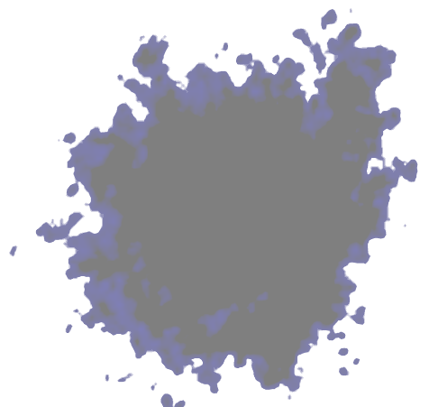
Cette tache noire engendrait la terreur et la compassion. Car il semblait que dans sa nature, Dieu ne l’avait pas créée noire, mais belle. Plus encore, elle avait déjà été une œuvre d’une très grande beauté créée par l’Être suprême. Je voyais cela lorsque mon toujours aimable Jésus me dit : Ma Fille, tout ce qui a été fait par nous dans la Création -demeure toujours dans l’acte d’être fait, -comme si nous étions continuellement dans l’acte de le faire. Telle est notre force créatrice qui, lorsqu’elle accomplit une œuvre, - ne s’en retire jamais - mais demeure toujours en elle comme acte de vie éternelle. Elle forme en cette œuvre -son battement continuel, -son souffle ininterrompu. De sorte qu’une fois l’œuvre achevée, Elle demeure toujours en elle dans un acte de création. Cela est presque symbolisé par la nature Humaine qui, une fois formée, commençant sa vie par le battement de cœur et la respiration, doit nécessairement continuer à palpiter et respirer sous peine que la vie ne s’arrête. Nous sommes inséparables de nos œuvres. Nous les aimons tant que nous prenons continuellement en elles nos délices. C’est pourquoi elles demeurent majestueuses, belles et nouvelles comme si elles recevaient à chaque moment le commencement de leur vie. Vois comme elles sont belles. Elles racontent notre Être divin et notre Gloire éternelle. Mais parmi tant de gloire, regardes : il y a la tache noire de la volonté Humaine. Aimant l’homme d’un plus grand amour, nous l’avons doté d’une volonté libre. Mais, en abusant de cette liberté, il a voulu respirer et palpiter dans sa volonté Humaine, non dans la nôtre. Par conséquent elle change continuellement au point - de devenir noire, - de perdre sa beauté et sa fraîcheur, et elle atteint le point où elle perd la vie divine dans sa nature Humaine. Qui donc dissipera les épaisses ténèbres de la volonté Humaine ? Qui lui rendra la fraîcheur et la beauté de sa création ? Les actes faits dans la Divine Volonté. Ils seront - la lumière qui dissipera les ténèbres, - la chaleur qui la modèlera et détruira en elle toutes les humeurs mauvaises qui l’enlaidissaient. Les actes accomplis dans ma Divine Volonté seront la reprise de tous les actes Humains faits dans la volonté Humaine. Cette reprise restaurera la fraîcheur, la beauté et l’ordre de la volonté Humaine à sa création. Il faut donc que de nombreux actes soient accomplis par la Créature dans notre divin Vouloir pour préparer le contrepoison, la beauté, la fraîcheur, l’acte contraire à chaque mal fait par la volonté Humaine. C’est alors que toutes nos œuvres dans la Création apparaîtront belles. La tache noire disparaîtra et sera convertie en un point, -le plus lumineux de tous, au milieu de la magnificence de nos œuvres créées. Notre Divine Volonté régnera sur tout, sur la terre comme au ciel. Par conséquent, sois attentive à agir dans ma Divine Volonté. Car pour chaque acte Humain, un acte divin est nécessaire qui, avec force, -renverse - purifie et - embellit le mal fait dans la volonté Humaine.
Et ceci est le récit de la conversation de Zarathoustra avec le chien de feu :
La terre, dit-il, a une peau ; et cette peau a des maladies. Une de ces maladies s’appelle par exemple : « homme ». Et une autre de ces maladies s’appelle « chien de feu » : c’est à propos de ce chien que les hommes se sont dit et se sont laissé dire bien des mensonges. C’est pour approfondir ce secret que j’ai passé la mer : et j’ai vu la vérité nue, en vérité ! pieds nus jusqu’au cou. Je sais maintenant ce qui en est du chien de feu ; et aussi de tous les démons de révolte et d’immondice, dont les vieilles femmes ne sont pas seules à avoir peur.
Ma Fille, que nos œuvres sont belles! Elles sont notre honneur et notre gloire permanents, Elles sont toutes à leur place Chaque chose créée remplit parfaitement sa fonction. Seul l'homme est notre déshonneur dans notre œuvre créatrice. Car, s'étant soustrait à notre Volonté, Il marche la tête en bas et les pieds en l'air. Quel désordre! Il est rebutant! Cela faisant, Il rampe sur le sol en se tortillant, se transformant, ses yeux ne peuvent pas regarder très loin et il n'a pas la possibilité de se déplacer pour découvrir les choses, de se défendre si l'ennemi est derrière lui, ni d'aller trop loin car, le pauvre, il est obligé de se traîner sur la tête, le fait de marcher étant la fonction des pieds, celle de la tête de dominer. La vraie et parfaite dégringolade de l'homme et le désordre de la famIlle Humaine, sont dus à son choix de suivre sa volonté Humaine. Voilà pourquoi Je tiens tant à ce qu'on connaisse ma Volonté, afin -qu'Il revienne à sa place, -ne se traînant plus sur la tête, mais en marchant avec ses pieds, -ne causant plus son déshonneur et le mien mais en rétablissant son honneur et le mien. Regarde, ne les trouves-tu pas laides ces Créatures marchant la tête en bas? N'éprouves-tu pas aussi de la peine en les voyant si désordonnées?" (5) En regardant, je voyais les têtes en bas et les pieds en l'air. Jésus disparut et je suis restée à regarder ce spectacle si désagréable des générations Humaines, en priant de tout mon cœur que sa Volonté soit connue. 27 Août 1926 tome 19 lien youtube 00:09:57
Ma sensation sur les 3 grands monothéismes et sur d'autres religions
Pendant quelques années, j'ai lu et/ou écouté divers textes concernant le Christianisme, l'islamisme, le judaïsme. Ce qui me sembla le plus élevé, pour le moment, ce me sembla les écrits de diverses figures du catholicisme. Écrits qui auraient pour partie eux-mêmes été dictés par Dieu. (Par exemple les écrits de Luisa Piccarreta ou, pour partie du moins, ceux de Maria Valtorta.) J'ai encore quelques doutes sur certains écrits de certaines figures relativement "mineures" du catholicisme mais globalement, les écrits des grandes figures du catholicisme et de certain(e)s Mystiques attachées au Christianisme, ce fut ce qui m'apparut comme ce qu'il y avait de plus élevé.
Pourquoi le catholicisme me semblerait porter un défi particulier par rapport à l'islam et au judaïsme.
Pourquoi
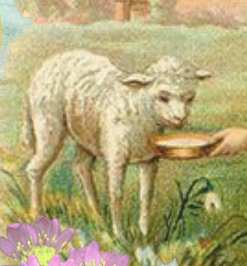
le catholicisme aurait selon moi un défi particulier par rapport à islam et judaïsme : Ne serait-ce que parce qu'il me sembla que ce fut la seule branche d'une des 3 grandes religions monothéistes (Christianisme, judaïsme, islamisme)(certains considèreraient qu'il y aurait davantage que 3 trois grandes religions, si l'on considère aussi l'hindouisme, par exemple), la seule branche, à ma connaissance, où "Quelqu'un", depuis des siècles, se prétendit être Dieu. Autrement rédigé, depuis des siècles, "Quelqu'un" s'est prétendu être Dieu, à des Filles alitées ou à d'autres. (À moins que dans l'hindouisme, Quelqu'un aussi soit venu depuis des siècles, parler, mais je connais moins cette religion). Ce "Quelqu'un" aurait prétendu être Dieu à des dizaines d'auteurs, sur des milliers de pages, à travers des siècles (du moins pendant l'antiquité, le moyen-âge, la renaissance). N'y aurait-il quand même donc comme un "défi"? Ne serait-ce que de savoir de qui il a s'agit. Fut-ce vrai? Fut-ce un imposteur? Qu'est-ce que "ce gars" a dit et/ou dicté?
pour agrandir/diminuer la taille de l'image avec le scroll de la souris : shift+mousewheel ou alt+mousewheel
Il y aurait peut-être un intérêt à vérifier qui se serait prétendu Dieu. Il s'agirait de "pas se louper", ne serait-ce que parce qu'il existerait peut-être bien une toute puissance, un Dieu et il y aurait à gagner que de ne pas "le louper" (considération qui rejoindrait, j'estime, en partie du moins, le pari de Blaise Pascal). (Je ferai peut-être plus tard, une analyse de ce pari de Blaise Pascal, mais j'eus l'impression qu'il était issu des pensées, et comme les pensées seraient un recueil de brouillons, ce pari serait à prendre avec des pincettes.)
Ma sensation sur le judaïsme
pour agrandir/diminuer la taille de l'image avec le scroll de la souris : shift+mousewheel ou alt+mousewheel
J'ai assez peu lu, ou écouté en livre audio, les livres du judaïsme post an 0 (par exemple, entre autres, le talmud). Par contre, depuis des années, et jusqu'à il y a encore quelques mois, j'ai écouté, en général, au moins quelques vidéos par semaine, de ravs francophones, sur internet.
J'estime les Judaïsants seraient très forts sur l'ancien testament, mais j'ai quand même l'hypothèse qu'avec globalement les Judaïsants, passé l'an ~30 et la crucifixion du Fils, les Judaïsants auraient été comme en décalage.
En fait de base, je garde l'hypothèse que quelque chose n'alla pas avec les Judaïsants, ne serait-ce que parce que le vrai Dieu, ce fut et serait encore la Trinité. Comment quand on a l'hypothèse que le vrai Dieu soit la Trinité, comment ne pas prendre avec des pincettes le judaïsme post an 0?
Et puis la mise de côté, sorte de "rejet" qu'eurent les Judaïsants, pour Maria Valtorta, Luisa Piccarreta, Bernadette Soubirous (lourdes) ou d'autres Créatures du catholicisme, ne serait-ce qu'Humainement parlant, ceci me sembla vraiment étrange. Chez la plupart des Judaïsants, avoir mis, à ce point, de côté, ces Filles, ceci ne me sembla pas tenir tout à fait de la rationalité. Pourquoi avoir mis et mettre encore à ce point de côté Maria Valtorta, à considérer les performances qu'elles eue (rédaction de milliers de pages sans ratures, quasiment pas d'alimentation sur des années..) Ou Luisa Piccarreta. ?? ou même Bernadette Soubirous et lourdes? Pourquoi mettre de côté lourdes, chez certains Judaïsants. N'y eut-il pas dans cette mise de côté une profonde "bizarrerie"? Comment Quelqu'un qui aurait encore, ne serait-ce qu'un minimum d'attention pour l'autre, pourrait mettre de côté les guérisons qui se seraient produites à lourdes? : marche retrouvée, ouïe retrouvée, ou vue retrouvée. Pourquoi à ce point avoir mis ceci de côté?
En fait, au moins une des questions en suspens, par rapport à certains Judaïsants, pour divers Judaïsants, depuis environ 2000 ans, serait : y eut-il quelque chose qui tint de l'égoïsme, de l'orgueil, chez eux? J'eus de quoi suspecter que logiquement, ce fut une communauté qui aurait eu tendance, depuis l'an ~0 et la première venue du Fils sur terre, une communauté qui aurait eut tendance à être relativement encline à la frustration, car ils auraient été choisis, du temps de Moïse, Abraham, en tant que peuple, mais il y aurait eu un tournant majeur avec la venue du Fils. De quoi donc logiquement suspecter une frustration émotionnelle, chez cette communauté.
J'ai suspecté que certains passages de textes du judaïsme post an 0 tinrent "du remous émotionnel": Divers Judaïsants auraient été forts pour sortir des histoires (par exemple sur Adam qui aurait eu des relations avec Lilith), des histoires à même d'exciter la psyché, le for intérieur des peuples, dans des époques, un monde lui-même encore bien probablement globalement malade de sa sexualité. Mais j'ai estimé que ce n'est pas parce que divers Judaïsants auraient été forts pour jouer sur des peurs profondes, des impasses profondes des peuples, que certaines histoires de rabbins post an 0 furent vraies, (diverses histoires du talmud ou autre livre du judaïsme post Fils). Ce fut divers textes des grandes figures du catholicisme qui durent m'apparaître comme bien plus véridiques. La transcendance, l'issue de secours, j'estime ce furent les grandes figures du catholicisme. Comme si je ressentis une capacité de transcendance, une pureté, une profondeur qui me sembla d'un autre niveau, pour ces figures du catholicisme. Une question d'instinct, de feeling. Comme si aussi, je ressentis parfois, chez divers Judaïsants, quelque chose de tribal. Chez divers Musulmanisans, aussi. Alors que je n'ai pas trouvé ce tribalisme, chez diverses figures du catholicisme (toutes les docteures de l'Église, entre autres).
Si je considère aussi la maturité, la qualité d'une religion à l'importance, la place qu'elle fit à certaines Filles, alors le catholicisme, avec son estime pour la vierge Marie et diverses Créatures féminines alitées au cours des dernières décennies, tiendrait pour moi, largement, la plus haute place.
Tout dépend si le Fils fut bien Dieu. Si tel fut le cas, l'hypothèse, sur les Judaïsants, le judaïsme, c'est que ce fut, à partir de la première incarnation du Fils sur terre, une communauté plus ou moins égarée. Une communauté très forte pour l'ancien testament, une communauté qui aurait encore bien des qualités. Par ailleurs, une communauté qui n'aurait été tout de même pas à sa place depuis à peu près deux millénaires. Au cours des dernières décennies, il y eut tout de même un retour en israël de nombreux Judaïsants et ils auraient commencé à revenir à leur place. Mais je suspecterais qu'ils ne reviendront pleinement à leur place et à leur rôle, qu'au moment du Machia'h (si tant est qu'il apparaisse un jour) ou du Fils.
Ma sensation sur l'islamisme
J'ai assez peu lu de textes sur l'islam, en dehors du coran. Mais depuis quelques années, j'ai parfois regardé/écouté des vidéos sur l'islam. Par exemple quelques vidéos de Maamar Metmati (chaine youtube), ou certaines vidéos d'Imran Hosein, ou même, plus récemment, quelques vidéos du vidéaste "aldo sterone" (sur sa chaine youtube "islamlab").
J'ai suspecté, comme "ressenti" que "l'islam", en partie, avait quelque chose de relativement primitif, par rapport à divers textes de grandes figures du catholicisme. Sauf, je dirais, pour au moins une partie du coran, ne serait-ce que parce-que le coran me sembla contenir des éléments semblables à l'ancien testament (il est parfois évoqué Moïse, par exemple). Mais le coran, j'ai suspecté, serait un livre qui prépare à la Trinité, à la venue du Mahdi et au troisième fiat. J'eus parfois l'impression que certains Musulmanisans (dont certains Maghrébins), eux-mêmes, ne semblèrent pas apprécier tant que ceci les hadiths et toute une partie de ce qui était présenté comme l'islamisme. Comme s'ils ressentir? quelque chose de suranné, désuet, archaïque dans certains aspects, coutumes de l'"islam". Je ne serais pas étonné, ou même j'eus comme la sensation que divers Musulmanisans actuels eurent comme un dédain, pour toute une partie de l'islamisme et qu'eux-mêmes ne supportaient pas toute une partie de ce qui fut présenté comme l'islam. (Depuis des décennies, les chiites, globalement, ne s'entendraient pas avec les sunnites.)
Un passage de Maria d'Agréda et quelques considérations sur ce passage
Passage de Marie d'Agréda, assez "chaud", concernant, il me semble, l'islam
après cette délibération, les démons se partagèrent en plusieurs bandes suivant les différents vices et se départir les offices qu'ils devaient exercer pour tenter les hommes. Avec toute l'astuce possible il décidèrent qu'il devait s'efforcer dès maintenir l'idolâtrie dans le monde afin que les hommes n'arrivent à ce point à la connaissance du vrai Dieu et de la rédemption du genre Humain et que si l'idolâtrie disparaissait il feraient naître de nouvelles sectes et des hérésies, en choisissant à cet effet les hommes les plus pervers et les plus corrompus qui seraient les premiers à les embrasser et à les enseigner. C'est dans ce conciliabule infernal que furent inventé la secte de Mahomet les hérésies de Darius, de Pelage, de Nestorius, et toutes celles qui se sont produites dans le monde depuis la primitive Église jusqu'à nos jours, entre plusieurs autres qu'ils y forgèrent, et qu'il n'est ni nécessaire ni convenable de rapporter ici. Source :
Malgré ce passage de Maria D'agréda, je me demande si le coran fut, en partie, inspiré par Dieu. Dernièrement (fin août 2024), j'ai écouté de temps en temps Ahmed Moualek, depuis sa sortie de prison. Et parfois, il me sembla aller dans le sens de la Trinité. Je l'ai écouté sur quelques vidéo d'une chaine portant le nom "Au Nom du Père, Son Messager Jésus et du St Esprit" Alors, ne serait-ce que pour diverses considérations d'Ahmed Moualek, je continue à me demander si le coran pourrait être, en partie du moins, un texte qui prépare à aller vers la Trinité.
Il y aurait eut aussi une controverse par rapport à divers textes de d'Agréda.
Une question serait : est-ce que Mahomet forma bien une secte? Mais que malgré tout, pour partie du moins, le coran fut inspiré par Dieu et prépare à aller vers la Trinité.
Ma sensation sur l'hindouisme, le Bouddhisme, le tantrisme. Ma sensation Bouhdisme/tantrisme comparé à islamisme
Ma sensation sur le Bouhddisme/tantrisme, depuis plusieurs années
Depuis des années, Bouddhisme, tantrisme, je dus avoir la sensation qu'il s'agissait, globalement, de religions plutôt "archaïques" / ancestrales. Des communautés pas forcément volontairement négatives, mais pas forcément des plus évoluées, matures, non plus. Je ne souhaiterais pas par là abaisser ces religions : il me semblerait bien plus aimable un Hindouiste, un Bouddhiste qui serait sans trop d'excès, qu'un(e) Athée occidental qui rejetterait tout de suite l'idée même qu'il puisse exister autre chose que la science. Un Athée qui serait dans la conviction que l'Humain provient d'un singe. Un Athée avec sa suffisance, sa politique, son(ses) sport(s). L'Occidental Athée me semblerait plutôt froid, immature, alors que chez un Bouddhiste, un Hindouiste, il y aurait encore une foi, un amour, quelque chose. Chez l'Athée scientifique, c'est comme s'il n'y avait presque plus rien. La maturité ne me semblerait pas la même. J'imagine que tous, en asie ne sont pas au même niveau :certains associeraient plutôt leur spiritualité, leur hindouisme/tantrisme/Bouhddisme à des pratiques corporelles, d'autres plutôt non, mais enfin je suspecte que le tantrisme/Bouddhisme n'atteignit pas le niveau du catholicisme. En fait, ce serait peut-être assez difficile/déplacé", de ma part de vraiment juger ces religions d'asie, comme je connais relativement peu, mais enfin, j'eus quand même une sensation. Bouhddistes, Hindouistes, je dus avoir de plus l'impression qu'ils furent dans un polythéisme. Et le polythéisme serait décalé, par rapport au Christianisme/Judaïsme/Islamisme qui seraient des monothéismes.
Plus récemment, en 2024, j'ai écouté deux vidéos de Marion Dapsance, depuis la chaine youtube de l'association eecho ( https://www.youtube.com/@AssociationEEChO-2007 ). De ce dont je me souviens /de ce dont j'ai compris de ces vidéos, le Bouddhisme serait pour partie du moins, quelque chose aussi d'assez archaïque. En fait Marion Dapsance évoque que le Bouddhisme serait venu des villes, mais globalement il n'y aurait qu'une seule source : le tantrisme.
En fait, j'estime qu'il en irait pour l'hindouisme, le Bouddhisme, le tantrisme, comme pour les autres autres religions qui ne seraient pas le catholicisme : s'il n'y a qu'un Dieu et que ce serait la Trinité, alors les religions autres que le catholicisme seraient en décalage. Pas au même niveau que le catholicisme.
Le Bouddhisme / le tantrisme / l'Hindouisme, par rapport à l'islam
L'islamisme, sous certains aspects, et à condition qu'il ne se pratique pas dans la violence physique, l'islamisme me semblerait même plus élevé que le Bouddhisme / tantrisme / Hindouisme, plus proche de la Trinité. En fait l'islamisme, le coran, de ce que j'en compris, l'islamisme aurait un lien avec Abraham (puis qu'Abraham aurait eut pour Enfant Ismaël, et Ismaël serait le père des Musulmans) et là encore, si depuis toujours il n'y a qu'un Dieu, alors il me semblerait logique que parce que l'islamisme soit issu, pour partie, de l'ancien testament (j'ai trouvé divers passages du coran, où il est cité diverses Créatures de l'ancien testament, par exemple Moïse), alors forcément, l'islmamisme, du moins sous cet aspect, serait plus près de Dieu que l'Hindouisme / tantrisme / Bouddhisme.
La sensation de certains, à travers quelques chansons
Y a plus d'avenir sur la terre. Y a quelque chose qui tourne pas rond, dans l'système solaire.
Qu'est ce qui pourrait sauver l'amour? Et comment retrouver le goût de la vie?
Autre version - Fabienne Thibeault
Y a plus d'avenir sur la terre.. Y a quelque chose qui tourne pas rond.. dans l'système solaire
Y a plus d'avenir sur la terre. Qu'est-ce qu'on va faire...
Qu'est-ce qu'on va faire?
Hypothèse / Perspective / Avenir
Dans toute cette ambiance, (au "milieu" de tant de Créatures qui seraient égarées) que pourrait-il advenir?
À se demander si sans Dieu, ce monde pourra/it tenir.
8 octobre 1906 -
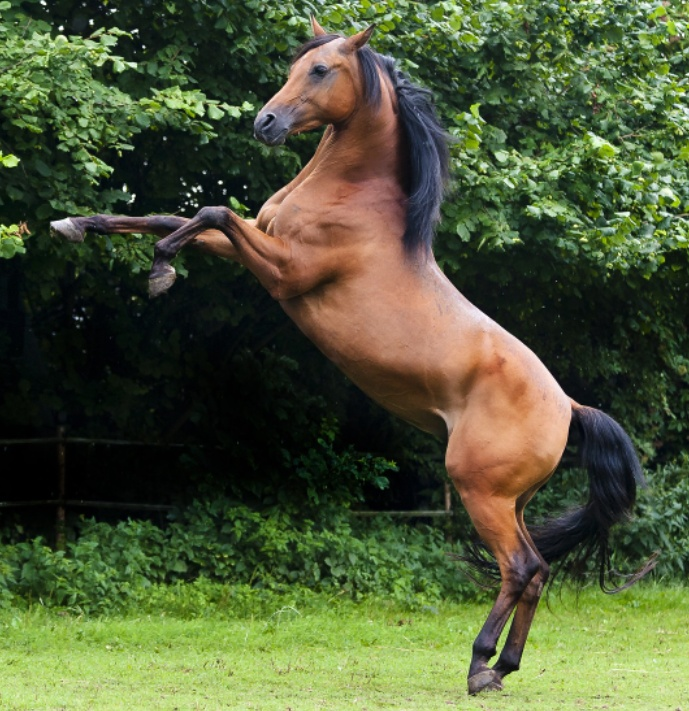
«Ma Fille, la croix est à la Créature ce que la bride est au cheval🐎. Que deviendrait le cheval si l'homme ne lui mettait pas de bride? Il serait indomptable. Il irait de précipice en précipice 🪨🪨🪨 jusqu'à ce qu'il devienne furieux, faisant du mal - à l'homme et - à lui-même. Par contre, avec sa bride, -il devient docile, -il va par des chemins sécuritaires, - il est prémuni contre les précipices et - il sert les besoins de l'homme comme un ami fidèle. «Telle est la croix pour l'homme. La croix -le mate et -l'empêche de tomber dans les sentiers erratiques de ses passions qui, comme un feu, le dévoreraient. La croix éteint ce feu Plutôt que de lui permettre d'être furieux contre Dieu et contre lui-même, elle le dompte. La croix est un chemin pour le salut de l'homme Elle l'aide à rendre gloire à Dieu. Oh! Si ce n'était pas la croix -que, dans sa Sagesse infinie, la divine Providence utilise pour brider l’homme, -combien de maux fondraient sur le genre Humain! » extrait du livre du Ciel
À se demander si beaucoup d'Humains/Humanoïdes actuels, voire la quasi totalité d'entre-eux, sur terre, ne sont pas, un jour, regouvernés directement par Dieu et/ou par un intermédiaire de Dieu (genre un Moïse), ils ne pourront que ressembler à ce cheval indomptable, furieux, faisant du mal à lui-même et aux autres. (Se faisant à eux-mêmes du mal par l'intermédiaire de la politique et autres systèmes).
Le cheval ?
La bride?
Le(s?) cavalier(s?)?
La quasi totalité des Créatures actuellement sur terre
Le vrai Dieu? La Trinité?
Le Fils? Un Mahdi? et/ou un Machia'h? et/ou un grand Monarque?
Dans un tel monde , l'hypothèse du retour plus concret d'une superpuissance (certains diraient Dieu)
Un retour plus concret de la Trinité? Pour bientôt?
"Un retour plus concret de la Trinité?" plutôt que "Un retour de la Trinité?" tout court, car la Trinité serait toujours présente partout. (S'il s'agit de Dieu.)
D'après le livre du Ciel, je dirais il y aurait au moins 2 signes selon lesquels il y aura un retour plus concret de la Trinité pour bientôt: - 1 signe mineur : une attente d'une ère nouvelle - 1 signe majeur : la révélation de sa Volonté à une âme (Luisa Piccarreta)
(Dans cet extrait (juste plus haut), quant il évoque "Je révèle ce que Je veux faire en me tournant vers une âme", j'estime que l'âme à laquelle aurait fait allusion le Fils, c'est Luisa Piccarreta)
Dictée qui aurait été réalisée par le Fils, le 14 juillet 1923, dictée à Luisa Piccarreta Au sein de cette période si triste, si sombre et si sanglante, ils attendent et espèrent une ère nouvelle dans laquelle la Volonté de Dieu sera réalisée sur la terre comme au Ciel. Tous, fatigués de la situation actuelle, espèrent cette ère nouvelle, mais sans savoir en quoi elle consistera vraiment. Au même titre que les Gens n'étaient pas conscients de ma venue sur la terre lors de ma première venue, cette attente généralisée est un signe certain que l'heure est proche. Mais le signe le plus certain est que Je révèle ce que Je veux faire en me tournant vers une âme, comme Je l'ai fait avec ma Mère à l'époque. Je communique à cette âme ma Volonté, les grâces et les effets qu'elle contient pour les faire connaître à toute l'Humanité.»
Le même Dieu que du temps d'Abraham, de Moïse, d'Élie?
Extrait du film "les dix commandements", de Cecil B. DeMille, (avec la voix de Charlton Heston, pour Moïse)
S'il y aurait qu'un Dieu, alors, ces temps actuels ne se préteraient-ils à son retour? Le retour du même Dieu qu'il y eut lors du temps de Moïse, d'Abraham, d'Élie... Le même Dieu hier, le même aujourd'hui, s'il n'y en a qu'un
? Le Dieu du temps de la tour de babel... D'ailleurs l'époque actuelle (premier quart du XXIème siècle) ne pourrait-elle trouver de ressemblances avec l'époque de Moïse? Les "pharaons" d'aujourd'hui étant divers dirigeants du monde actuel? Et les magiciens du temps de Moïse seraient actuellement divers Gens qui essaieraient de nous faire croire des valeurs inspirées de "démons"? Ou ce temps actuel, pourrait-il aussi trouver des ressemblances avec le temps d'Abraham, le temps où Abraham fit face au polythéisme des idoles de pierre (et de bois?), les idoles de ce temps actuel étant diverses religions autres que celles menant vers la Trinité? Aller vers le monothéisme du temps d'Abraham correspondrait maintenant à ce qu'islam, Bouhdisme, hindouisme et autres religions rejoignent tous la Trinité? La Trinité étant le seul vrai Dieu?
Si un retour plus concret d'un Dieu : de quelle manière? / Un seul monothéisme mondial, mais comment?
Préambule - un seul monothéisme mondial
vidéo de mouton et d'agneau, avec pour fond musical, un extrait d'une musique de W.A.Mozart
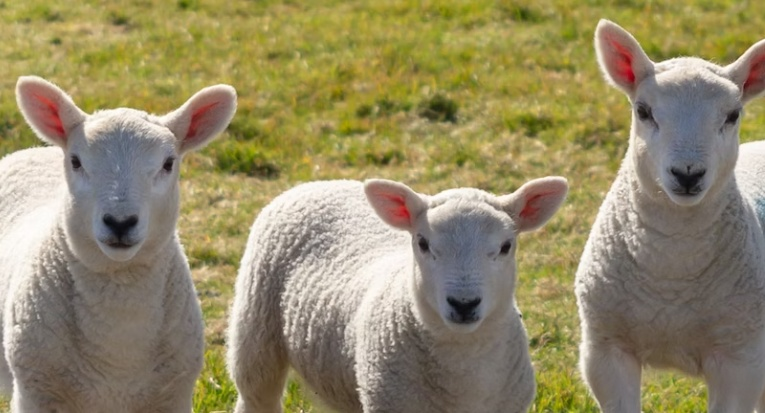
S'il y a un jour un seul monothéisme mondial (un monothéisme qui ne me sembla pas en place actuellement (année 2024), puisque, ne serait-ce que pour les Judaïsants, leur Dieu ne serait pas le même que celui des Christianisants), j'imagine les Créatures d'origine juive, du moins pendant un temps, devraient garder leur spécificité. Et les Créatures d'origine Chrétienne aussi, mais sous l'égide d'un même Dieu, les Musulmanisans aussi. Et les bouddhistes aussi, quoique je connaisse relativement moins cette "religion". Pour le moment, je verrais les religions comme complémentaires les unes des autres. Par exemple, le Christianisme tel qu'il est appliqué actuellement, ne séparant pas vraiment Garçons et Filles, ne me semblerait pas suffisant pour se gérer des peuples relativement excités sexuellement. Parce que par exemple, dans les églises, Garçons et Filles ne sont pas séparés. Et j'estime alors, que dans ce domaine Garçons/Filles, l'islam et/ou le judaïsme seraient plus adaptés, puisque "chez eux", Garçons et Filles sont séparés. Mais l'islam et/ou le judaïsme, dans d'autres cas/domaines, j'estime, seraient insuffisants à eux seuls, et il faudrait alors un chapeautage catholique.
J'émets tout de même l'hypothèse, le questionnement, de savoir si la Trinité, la Trinité du livre du Ciel devrait en arriver à être la religion commune.
Un unique monothéisme mondial? Par une Trinitisation?
Voici un schéma/hypothèse pour la mise en place d'un unique monothéisme mondial / une Trinitisation
pour agrandir/diminuer la taille de l'image avec le scroll de la souris : shift+mousewheel ou alt+mousewheel
1er schéma/film animé de ce site : sorti le dimanche 9 février 2025. Pas tout à fait au point encore je dirais, mais bon, comme j'avais évoqué sortir un premier schéma animé/film sous une certaine date. (J'eus conscience que certaines flèches devraient être de la même couleur et ne le sont pas. Je modifierai peut-être ceci dans un moment.)
Si tant est qu'il y ait un Mahdi qui apparaisse un jour, une fois installé à la mecque, le Mahdi devrait-il "remonter" vers Jérusalem? (au bout de quelques semaines? mois? années?(à choisir, je pencherais plutôt pour quelques années)). Et continuer, quelque sorte, une "croisade"? Une "croisade" qui aurait d'abord commencé par la Trinitisation des Musulmanisans. Une "croisade" pacifique, avec l'appui de Dieu. (Le mot croisade dut me sembler quand même plus ou moins attaché à quelque chose de guerrier (voire "violent") et ce ne serait pas le but de cette Trinitisation, alors ne serait-ce que pour ceci, je mis le mot croisade entre guillemets.)
Les premières croisades seraient parties d'europe, avec les armes, pour aller rejoindre Jérusalem. Cette nouvelle "croisade"/Trinitisation, elle, partirait d'arabie saoudite, pour aller apporter la Trinité aux Musulmanisans, puis aux Judaïsants, et peut-être même ensuite ou dans le même temps, à divers "païens", athées, agnostiques plus au nord (en europe), à l'ouest (afrique et amériques) et à l'est (asie, océanie).
En fait quel serait l'objectif de cette Trinitisation : comprendre qu'il existe un Dieu, que de lui émanerait tout bien et récolter les fruits de ce bien, plutôt que de continuer à s'égarer collectivement sans lui. Arrêter de partir à la dérive, autrement rédigé. Aller vers la sainteté.
Si les Musulmanisans sont formés à la Trinité par le Mahdi, il se pourrait même qu'ils apportent aux Christianisants (c'est-à-dire des Gens qui ne seraient pas encore tout à fait en phase avec la Trinité) un appui pour aller vers le Christianisme du troisième fiat. Par exemple les Christianisants orthodoxes (de ce que dut comprendre, pendant des décennies (ou même des siècles) ils ne crurent pas de la même manière à la vierge Marie que les catholiques).
Schéma-hypothèse comparatif premières croisades / Trinitisation
pour agrandir/diminuer la taille de l'image avec le scroll de la souris : shift+mousewheel ou alt+mousewheel
Image du concile de clermont, aurait eu lieu du 18 au 26 novembre 1095
Première croisade
''croisade''
Première croisade
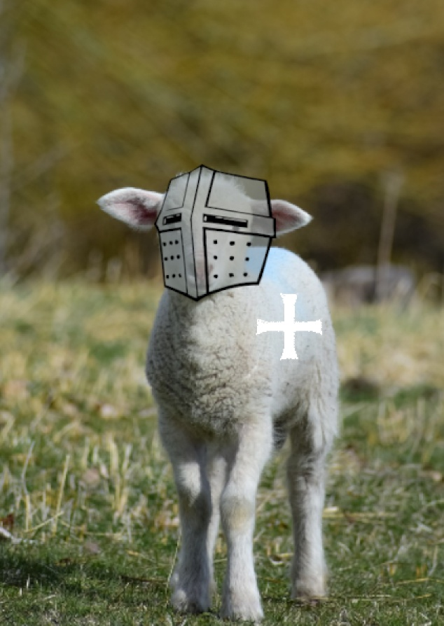
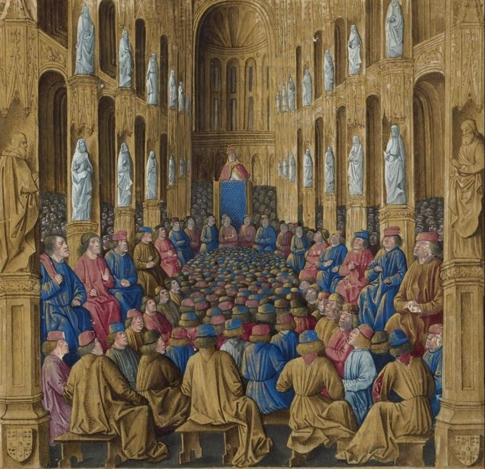
La Trinitisation par rapport aux guerres des 2 premiers millénaires : une conscience différente pour le soldat
Quelle devrait être la différence, ou du moins, une des différences, entre une collectivité de la Trinitisation, par rapport à la plupart des armées de ces deux derniers millénaires? : C'est que la collectivité de la Trinitisation recevrait bien davantage le soutien de Dieu, comme du temps de Moïse. Il serait alors concevable que les membres de cette communauté n'aient plus à avoir de problèmes de conscience comme j'estime, en général, ce put souvent être le cas, pour les soldats, dans les armées, par le passé.
Guerres Humaines/Humanoïdes, depuis des millénaires Généraux Militaires, soldats
Trinitisation Le Fils et? un Mahdi et/ou? un Machia'h et/ou? un grand Monarque? Fidèles, communauté religieuse
💥De la poudre, des obus, des balles, des bombes💣, des épées, des flèches etc.💥
Invocations collectives à Dieu
Volonté Humaine. excepté certains rois (ou dirigeants) qui veillèrent à apporter le Christianisme
Volonté de Dieu
La plupart des fois, les chefs de ces guerres n'attendirent pas le feu vert de Dieu. En général, ils n'agirent pas spécialement en lien avec Dieu. Sauf par exemple Moïse, ou le roi David ou Jeanne D'Arc
Mahdi et/ou Machia'h et/ou grand Monarque (ou Quelqu'un(e?) d'autre?) qui attend le "feu vert" de Dieu
Pour le soldat de ces armées, souvent mauvaise conscience consécutive à avoir obéit à des dirigeants qui n'agissaient pas eux-mêmes directement en lien avec Dieu. Mauvaise conscience d'avoir handicapé autrui (perte de jambe, par exemple). Et s'il n'y eut pas mauvaise conscience de la part du soldat, et même "plaisir", alors mon hypothèse, c'est qu'il y eut "possession démoniaque" de certains soldats.
Pas de problème particulier de conscience. Si dans le "camp" adverse il y a des morts, des blessés, morts ou blessés par des "événements magiques".
En général, guerre armée
Pacification/sanctification soutenue par Dieu
Pas ou peu d'événements "magiques".
Événements "magiques"? comme du temps de Moïse. "Feu de Dieu"? Arche d'alliance qui devrait être retrouvée avant l'avènement d'un éventuel Mahdi? ou retrouvée pendant la Trinitisation?
L'apparition d'un Mahdi? et/ou d'un Machia'h? et/ou d'un grand Monarque?
Préambule Machia'h, Mahdi, grand Monarque
Y
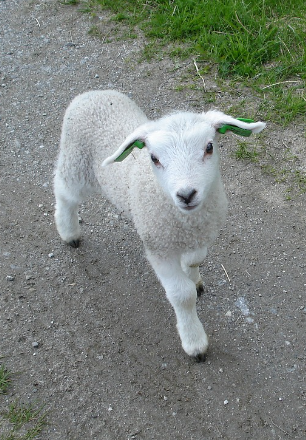
aura-t-il un jour l'apparition d'un Mahdi (c'est-à-dire une sorte de nouveau Moïse pour les Musulmans)? Un Mahdi qui deviendra ensuite le Machia'h? (c'est-à-dire une sorte de nouveau Moïse pour les Judaïsants). Et un Machia'h et/ou Mahdi qui se révélera ensuite avoir été aussi le grand Monarque? Où y aura-t-il plusieurs êtres distincts? Ou n'y aura-t-il que l'apparition du Fils? Ou de personne?
Ton Jésus saura trouver sa voie pour trouver celui qui accomplira la mission de faire connaître ma Divine Volonté parmi les peuples. Extrait du Livre du Ciel – Tome 26 - Dictée qui aurait été tenue à Luisa Piccarreta par le Fils, le 25 août 1929
Le "celui" de cette phrase pourrait-il être le Mahdi et/ou le Machia'h et/ou le grand Monarque?
Apparition d'un Mahdi et/ou Machia'h et/ou grand Monarque et/ou du Fils : 4 hypothèses + autres hypothèses
Apparition de rien du tout
Apparition que d'un Mahdi et/ou Machia'h et/ou grand Monarque
Apparition que du Fils
Apparition du Fils et d'un Mahdi et/ou Machia'h et/ou grand Monarque
(Pas d'apparition du Fils)
(Pas d'apparition d'un Mahdi et/ou Machia'h et/ou grand Monarque)
Mahdi = Machia'h = grand Monarque ou 3 êtres distincts
Que le Fils
Mahdi = Machia'h = grand Monarque ou 3 êtres distincts?
Autres hypothèses : apparition de Quelqu'un(e?) pour les bouddhistes? les hindouistes?, ou pour d'autres communautés..
One Man Le Mahdi/Machia'h/Grand Monarque ? one goal, one mission One heart, one soul, just one solution One flash of light One God, one vision One true religion, one voice, one hope, one real decision
J'ignore s'il y aura un Mahdi, et/ou un Machia'h et/ou un grand Monarque. Mais divers éléments me donneraient de la plausibilité à ce qu'il y ait un Mahdi, et/ou un Machia'h et/ou un grand Monarque. J'ignore aussi si ce Mahdi et/ou Machia'h et/ou grand Monarque devrai(en)t faire la promotion d'un seul Dieu. De base, j'estime, ceci dépendrait de savoir s'il n'y aurait qu'un Dieu. S'il n'y a bien qu'un Dieu, et que ce soit la Trinité, alors j'estime que pour qu'un Mahdi puisse réussir, il devrait promouvoir le vrai Dieu. Sinon, ceci ne pourrait pas fonctionner. Si du temps du début de l'islam, (vers 600), l'islam a pu se répandre largement, j'ai suspecté, c'est parce qu'il apporta un relatif monothéisme dans la région. Mais maintenant, chez les Musulmanisans, un relatif monothéisme est en place, et j'estime qu'apporter le monothéisme à autrui ne serait plus suffisant à ce que l'islam soit validé comme il me sembla l'être il y a plusieurs siècles. Il faudrait encore associer ce monothéisme à la Trinité, si tant est que la Trinité soit bien l'unique Dieu. D'ailleurs, au cours des dernières décennies, si ce qui fut présenté comme l'islam essaya de passer en force, "cet "islam" ne fonctionna globalement pas (état islamique, entre autres). Pareil pour les Judaïsants: j'ai suspecté qu'il ne pourrait y avoir l'apparition d'un Machia'h qui réussisse à mettre la religion Judaïsante actuelle comme seule religion et religion ultime. Car ceci mettrait trop de côté le véritable Dieu, c'est-à-dire, peut-être, la Trinité. Pour les Christianisants actuels, un problème, c'est : est-ce qu'ils auraient bien le bon Dieu? Certes, ils seraient quand même à un niveau théologique assez élevé, mais leur Dieu actuel serait-il bien le même que celui de Maria Valtorta et Luisa Piccarreta? Serait-ce bien le Fils? Ou simplement une partie du Fils et/ou une partie du Fils "déformée"? Et puis les Chrétiens seraient encore séparés entre Catholiques, Protestants, Orthodoxes...
pour agrandir/diminuer la taille de l'image avec le scroll de la souris : shift+mousewheel ou alt+mousewheel
S'il y a un seul Dieu, et que ce soit la Trinité (Dieu 3 en 1), ceci impliquerait, j'estime, que la seule manière pour qu'un Mahdi et/ou un Machia'h soit validé par Dieu, c'est qu'il faudrait qu'il aille vers la promotion de la Trinité. Il n'y aurait pas le choix. Si Dieu aurait laissé le libre arbitre à chacun, par contre, je suspecte, il donnera son appui seulement à celui/ceux qui le reconnaitront. Ainsi, du temps de Moïse, il aurait donné à chacun son libre arbitre, mais, au cours de certains événements (par exemple lors de l'ouverture de la mer, par Moïse), son appui, il l'aurait donné à Moïse plutôt qu'au pharaon. J'ai estimé que si un Mahdi ou un Machia'h n'allait pas vers la Trinité, ce serait comme s'il n'allait pas vers le véritable Dieu, et alors, automatiquement, il ne serait pas soutenu par Dieu, ou enfin, si tant est qu'il soit soutenu, il le serait relativement très peu.
(Certains pourraient se demander, pourquoi si l'islam n'eut pas le véritable Dieu, de base, il put tout de même se répandre fortement, à ses débuts (vers l'an 600). Une hypothèse, un questionnement de ma part, c'est que tout de même, le véritable Dieu, aurait "laissé faire", vers l'an 600. Ne serait-ce que parce que tout de même, en ce temps, l'islam amena un monothéisme dans la région. Et amena aussi des figures religieuses, à travers le coran (Abraham, Moïse, entre autres). En ce temps-là, l'islam aurait été amené, ou peut-être plutôt laissé faire, comme religion préparatoire au dévoilement de la Trinité, pas comme fin en soi.)
Le Mahdi
Ce qui me donnerait de la plausibilité à ce qu'il y ait un Mahdi et/ou un Machia'h et/ou un grand Monarque.
Ce qui me donnerait de la plausibilité à ce qu'il y ait un Mahdi et/ou un Machia'h et/ou un grand Monarque. Peut-être même d'ici assez peu de temps : d'ici moins de quelques années (à compter de 2024)
Un point m'ayant semblé donner de la plausibilité à un Mahdi et/ou Machia'h et/ou grand Monarque, c'est que le Fils aurait déclaré à Luisa Piccarreta : "Ton Jésus saura trouver sa voie pour trouver celui qui accomplira la mission de faire connaître ma Divine Volonté parmi les peuples."(le 25 août 1929) Cette phrase me laisserait, pour le moins, suspecter, qu'il y aura Quelqu'un.Le "celui" de cette phrase sera-t-il le Mahdi et/ou le Machia'h et/ou le grand Monarque?
Plausibilité d'un Mahdi/Machia'h/grand Monarque : Il y aurait déjà eut, historiquement, quelques Créatures qui auraient eut des pouvoirs extraordinaires (lévitation, bilocation, etc. (par exemple
)) : ceci me donnerait de la plausibilité à ce que Quelqu'un (un futur Mahdi? et/ou un futur Machia'h? et/ou un grand Monarque?), puisse avoir aussi des pouvoirs extra-ordinaires. Je dus considérer que non seulement le Mahdi et/ou le Machia'h et/ou le grand Monarque pourrai(en?)t avoir des pouvoirs spéciaux comme certaines figures de l'Église en auraient eut, mais j'ai suspecté qu'il(s?) pourrai(en?)t même en avoir beaucoup plus, car le Mahdi et/ou Machia'h et/ou grand Monarque aurai(en)t le soutien de millions ou même de milliards de Créatures qui le(s?) rejoindrai(en?)t. Une sorte d'expérience mystique qui cette fois-ci se ferait bien plus collectivement qu'elle ne se serait déroulée avec la plupart des Mystiques de l'Église. (Qui auraient vécu(e)s, pour certaines d'entre eux/elles, du moins, des expériences mystiques bien plus isolement, dans des endroits retirés : couvents, monastères, etc.) Seulement avec peu de "Mystiques" il y aurait déjà eut une sorte d'expérience mystique collective directe : par exemple avec Moïse, ou avec le Fils (du temps de sa première venue sur terre) ou padre Pio. Avec le Mahdi et/ou le Machia'h et/ou le grand Monarque, l'hypothèse quant à l'ampleur de leur action directement sur les hommes, c'est que ce devrait être sinon mondial, du moins continental.
Plausibilité d'un Mahdi/Machia'h/grand Monarque : L'état global du monde actuel (guerres de-ci de-là. Risque de guerre atomique? Mondiale?) Au cas où il y existerait bien ces armes atomiques, que resterait-il d'autre que Dieu pour protéger le monde? Des extraterrestres ou des terrestres qui auraient des technologies avancées pouvant contre-carrer ces armes atomiques? Mais y aurait-il bien ces extraterrestres? ou ces contres armes?, déjà accessibles, à des terrestres ou Extra-terrestres? Et puis si tant est qu'ils aient ces contre-armes, interviendraient-ils? La quantité de ces armes serait-elle suffisante, en nombre?
Plausibilité d'un Mahdi : Parce que chez les Musulmanisans il existe déjà toute une culture, une éducation, concernant le Mahdi. Du moins en partie, le terrain serait déjà préparé, pour la venue d'un Mahdi.
Plausibilité d'un Machia'h : parce que chez les Judaïsants, il existe déjà toute une culture, une éducation, concernant le Machia'h. Du moins en partie, le terrain serait déjà préparé, pour la venue d'un Machia'h. Depuis des années, sur internet du moins, divers ravs évoquèrent le Machia'h. Plusieurs signes concorderaient dans le sens d'une imminence de sa venue. (Entre autres signes, retour de divers Judaïsants en terre d'israël, la terre d'israël qui redonne ses fruits)
Pourquoi je dus suspecter que la Trinité puisse passer chez les Musulmanisans et les Judaïsants? : Parce que la Trinité qui devrait être présentée par une venue éventuelle d'un Mahdi/Machia'h serait une "nouvelle" Trinité. (En fait ce serait la même Trinité, si je considère qu'il n'y aurait qu'un Dieu et que ce serait toujours le même, sauf qu'il serait présenté d'une nouvelle manière.) Pour rédiger les choses autrement, un Dieu présenté comme puissant, vainqueur, plutôt qu'essentiellement cloué, gémissant, blessé, décharné, sur une croix. Une hypothèse serait que l'éventuel Mahdi et/ou le Machia'h devrai(en?)t montrer, une image renouvelée, puissante, de la Trinité. En fait, une problématique de l'occident fut peut-être qu'ils présentèrent le Fils, pour beaucoup, souvent, dans une image de crucifié. Une sorte d'image de "mort", "défaite" (qui n'en serait pas une, si on considère symboliquement, ce que cette crucifixion représenta, mais à première vue, il y aurait de quoi à ce que cette image, j'estime, puisse logiquement, pour certains du moins, être assez pénible, difficile à comprendre). Et cette image-ci (du "Fils en croix"), l'oriental, en général, eut peut-être davantage de difficulté à l'accepter, que l'occidental. Ce qui pourrait peut-être, en partie être à leur honneur. Car ce fut peut-être aussi alors par une forme de respect, qu'ils ne purent reconnaitre le Fils tel qu'il aurait souvent été représenté par les Christianisants : c'est à dire souvent un Fils en croix.
Pourquoi d'abord l'apparition d'un Mahdi à la mecque plutôt que d'abord l'apparition d'un Machia'h en israël :
Pourquoi me semblerait plus plausible d'abord l'apparition d'un Mahdi promouvant la Trinité à la mecque, plutôt que d'abord l'apparition d'un Machia'h promouvant la Trinité en israël, ou même d'un grand Monarque :
ou autrement rédigé : plausibilité que ce si un "nouveau Moïse" apparaissait, il me semblerait plus probable qu'il apparaisse d'abord chez les Musulmanisans plutôt que chez les Christianisants ou les Judaïsants
Comme si beaucoup d'ingrédients étaient en place pour un unique monothéisme mondial et qu'il ne manquait plus qu'à faire le plat. Ou enfin, peut-être certains ingrédients ne sont pas encore en quantité suffisante, mais si tant est qu'il manque des ingrédients, comme la sensation qu'il n'en manque plus beaucoup.
👨🍳 Le "cuisinier"? : La Trinité. Et avant sa seconde venue, cette Trinité passera-t-elle par un Mahdi et/ou à un Machia'h et/ou à un grand Monarque?👨🍳
Les ingrédients? : les nations, les peuples, les monothéismes séparés les uns des autres (entre autres, l'islam, le judaïsme) et d'autres religions (Bouhddisme, hindouisme, etc.). 🥚🧈🍓
Les mois ou années de préparation du gâteau : la durée de règne du Mahdi/Machia'h/Gran Monarque 🍳
Le gâteau final? : un seul monothéisme mondial. Une Humanité enfin "mangeable", "cuite". 🥧🎂🍰
Parce que les Musulmanisans auraient davantage besoin de la Trinité que les Chrétiens (qui l'auraient déjà relativement davantage).
Les Musulmanisans, (et parmi eux les Maghrébins en particulier), je dirais une communauté mitigée "par excellence", j'ai estimé, ce seraient ceux auxquels il manquerait le plus un père. Ce seraient donc eux, les plus fervents à ce qu'un père symbolique revienne en premier. Par ailleurs, les Judaïsants, et même le monde entier, si je considère qu'il y a bien un Dieu, il leur manquerait un Père. Mais je dirais que peut-être parmi ceux à qui il manquerait le plus, ce seraient les Musulmanisans.
Parce que l'occident me sembla trop léthargique, trop sous emprise de puissances maléfiques. Les Christianisants actuels me sembleraient trop dispersés. (En france, par exemple, il y a de moins en moins d'églises, et peu de Gens me semblèrent encore attachés à la Trinité.) Beaucoup de Christianisants actuels me sembleraient trop immatures, pour s'occuper, à l'international, de peuples. (Ne serait-ce qu'à considérer leur rapport à la pudeur.) Et puis les Christianisants européens actuels seraient moins en manque de la Trinité que les Musulmanisans, ne serait-ce que parce qu'ils l'auraient déjà bien davantage que les Musulmanisans.
Une partie des Musulmanisans auraient été particulièrement en lutte contre diverses puissances "démoniaques", au cours des dernières décennies, puissances véhiculées, entre autres, par une partie de l'occident.
Par rapport aux Musulmanisans, il dut me sembler que certains Judaïsants rejetaient encore la Trinité, ou du moins la mettaient de côté. Ce semblerait donc difficile qu'un Machia'h arrive d'abord chez les Judaïsants et promeuve la Trinité, par rapport à s'il promouvait la Trinité chez les Musulmanisans. J'ai estimé que les Judaïsants, dans un premier temps, seraient "trop durs" à ramener vers la Trinité, comparé aux Musulmanisans.
Les Judaïsants seraient moins à même d'accepter Quelqu'un qui promouvrait Luisa Piccarreta/diverses figures du catholicisme que les Musulmanisans. Pendant des années, les Judaïsants mirent fortement de côté les Créatures de l'Église alitées (Luisa Piccarreta, Maria Valtorta, Catherine Emmerich) ou d'autres Créatures de l'Église (par exemple Bernadette Soubirous ou Catherine de sienne).
J'eus l'impression que les Musulmanisans reconnurent, "pour moitié" (ou pour partie, du moins), le Fils, alors que les Judaïsants, globalement, le reconnurent bien moins.
Dans ce qui a été évoqué à propos du Mahdi, il y eut une histoire selon laquelle la mecque serait attaquée, attaquée depuis l'est, au moment où le Mahdi serait à la mecque. Or j'ai estimé qu'il ait une plausibilité d'une attaque de la mecque venant de l'est: À l'est de la mecque se situent le qatar et riyad. Y aurait-il, en partie du moins, quelque chose de "démoniaque" là-bas et dans les environs? Le qatar aurait-il exploité depuis des années diverses Créatures pour diverses constructions? Il y eut encore récemment la coupe du monde de football. Ceci me fit songer au temps de l'égypte avec tous ces "esclaves", exploités pour construire ceci cela. Mohammed Ben Salmane serait-il plus ou moins possédé? Aurait-il appliqué, depuis des années, un "islam" en désaccord avec l'islam originel (dont la peine de mort). Fera-t-il partie d'une coalition pour attaquer la mecque? À moins qu'il la défende?..
Parce que ceci aurait été le but (indirect) du coran, de préparer les Musulmanisans à recevoir la Trinité. Je reviendrai peut-être plus tard sur ceci en mettant des extraits du coran.
Autre élément de plausibilité à ce qu'il y ait un Mahdi avant un Machia'h ou un grand Monarque : depuis des années, il y eut des rassemblements de Musulmanisans pour des prières collectives, à la mecque (souvent au moins des dizaines de milliers de Musulmanisans) et il me sembla que de tels rassemblements n'existèrent pas, en termes de quantité de Créatures, à ce point, chez les Christianisants (en europe, du moins, à part les jmj (rassemblements journées mondiale de la jeunesse, mais les jmj furent des rassemblements assez peu fréquent, comparés aux rassemblements autour de la kaaba). Et si dans le futur diverses "puissances démoniaques" devaient s'attaquer au monde plus durement que maintenant, alors peut-être un des seuls moyens de contrecarrer ces puissances, serait non plus les armes conventionnelles, industrielles (fusils, etc.), mais les invocations collectives. Et dans ce sens, actuellement, j'estime, ce seraient les Musulmanisans qui seraient les plus capables de rassembler des centaines de milliers de Créatures, pour des prières collectives. Une armée tentant d'envahir la mecque depuis l'est de la mecque devrait d'ailleurs être contrecarrée par le Mahdi lors d'une invocation collective.
Plausibilité d'un Mahdi et d'une Trinitisation effectuée par un Mahdi à venir? : Car la Kaaba devrait être détruite? Pour marquer un tournant dans la foi musulmane? Pour laisser place à un monument dédié à la Trinité?
Autre plausibilité à ce déroulé : il me sembla que justement les Musulmanisans s'étaient spécialisés dans un rôle de lutte contre un certain aspect - Peut-être maléfique?- de certains Judaïsants. Avec la bande de gaza?
Ce Mahdi devrait-il faire comprendre aux Musulmans que le vrai Dieu serait le Fils?, à l'appui du livre du Ciel et d'autres textes de théologie catholique?
Puis devrait-il le faire comprendre aux Judaïsants? (ou enfin à au moins une partie d'entre eux.) Et enfin à divers Christianisants eux-mêmes? (Car leur image du Fils ne serait pas forcément adéquate pour une partie des Christianisants actuels). Des Christianisants qui seront d'ailleurs peut-être les derniers à reconnaitre le Mahdi/Machia'h/grand Monarque? (après les Musulmanisans et les Judaïsants).
Mahdi. Une tentative d'invasion de la mecque? Par l'est?
"si, aux moments tragiques où un massacre vous menace, les invocations égalaient en nombre les imprécations — note que je ne parle pas d’un nombre supérieur, mais égal —, tous les pièges et les volontés des démons et des hommes-démons seraient détruits et tomberaient sans vous faire plus de mal, comme un vautour dont les ailes sont brisées et qui ne peut plus attraper de proie." Maria Valtorta, les cahiers de 1944, 9 janvier
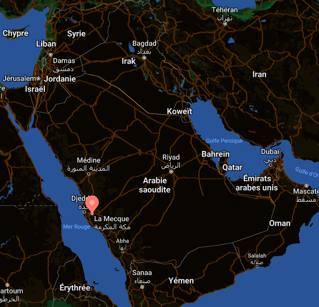
S'il se trouve que c'est la Trinité le vrai Dieu, j'estime la réussite de la gouvernance par le Mahdi, sur des millions (ou même milliards?) de Musulmans passerait par la Trinité, le livre du Ciel et au cas où le Mahdi serait confronté à des guerres contre d'autres nations, communautés, j'estime il aurait à ne pas utiliser directement la force physique (ou sinon peut-être simplement à titre défensif). C'est d'ailleurs ce qui devrait se produire lors de la tentative d'invasion de la mecque. Divers Musulmanisans devraient rester en invocation collective, plutôt que de partir "les armes à la main".
Au niveau de la tentative d'invasion de la mecque, quand le Mahdi devrait être à la mecque, devrait-il y avoir une invocation collective? Invocation collective qui fonctionnerait, selon aussi ce que dit dit Jean-Marcel Gaudreault ~à 7:55 sur la vidéo.
Tentative d'invasion de la mecque - D'où devrait venir cette tentative d'invasion? D'une armée formée par le qatar? et/ou les émirats arabes unis et/ou une partie de l'arabie saoudite (riyad)?
Playlist vidéos Mahdi
Quelques caractéristiques du Mahdi
Descendant de Mohammed.
Son nom : Mahomet (en arabeمُحَمَّدُ, retranscrit en Muḥammad), également dit Muhammad ou Mohammed. (Il se traduit par qui "comblé d'éloge" ou "digne de louanges"). D'après certains, de la lignée de Fatima. Personnellement, je doute que que son prénom de base soit forcément Mohammed, mais probablement prendra-t-il ce prénom/surnom pendant un temps? Par exemple, son prénom de base pourrait-il être Gilbert, Siegfried, ou Farid, mais il prendra temporairement le nom Muhamad? Ainsi, il sera appelé Muhammad, mais son prénom de base pourrait être un autre prénom ?
Les chiites l'attendent comme le 12ème imam. (Reportage "en attendant l'imam caché", dans la playlist vidéo précédente)
Devrait comme "refuser" d'être le Mahdi pendant un temps. (Ou du moins donnera-t-il cette impression.)
Quelqu'un qui devrait être amené à la mecque, et repousser une attaque venue de l'est.
Le Fils devrait "descendre" et devrait inciter le Mahdi à diriger le peuple.
Caractéristiques physiques : Front large, Nez aquilin
Devrait être "rectifié" en une nuit.
Aurais-je trouvé une plausibilité à ce que le grand Monarque apparaisse avant le Mahdi? Peut-être, oui, je dirais. (Par contre j'estime je ne verrais pas trop de plausibilité à ce qu'un Machia'h apparaisse avant le Mahdi.)
Je crus comprendre qu'une signification du mot islam signifiait soumission. Avec le Mahdi, le mot islam pourrait-il en venir à signifier soumission à la Trinité?
Une nouvelle chahada?
Avec le Mahdi, une nouvelle chahada?
En l'an ~600
Après le "décès" du prophète et jusqu'à maintenant
D'ici peu de temps? Lors de l'apparition du Mahdi?
Musulman
Musulmanisan
Musulmanisan ➡️ Musulman Le titre de Musulman ne pourrait être donné qu'à celui d'orientation Ismaëlienne/Mohammetane qui promouverait la Trinité?
Communauté musulmane validée par Dieu car s'étant rapprochée de lui
Communauté qui "s'éparpilla"? Communauté Musulmanisane moins validée par Dieu?
Communauté ayant déjà compris qu'un seul Dieu était à considérer.
Croire qu'il n'y a qu'un Dieu : Notion suffisante pour être validé par Dieu, au début de l'islam. Un progrès, pour l'époque.
Croire qu'il n'y aurait qu'un seul Dieu : Maintenant notion insuffisante à elle seule pour que le Mahdi reçoive le soutien de Dieu? Il faudrait en plus de croire qu'il y qu'un Dieu, adopter que c'est la Trinité. d'où
Première chahada : « J'atteste qu'il n'y a pas de divinité en dehors de Dieu et j'atteste que Mahomet est le Messager de Dieu. » Image représentant la chahada :
Nouvelle chahada? : Il n'y a qu'un Dieu : La Trinité. - Une autre version de cette nouvelle chahada : Il n'y a de Dieu que la Trinité. - Autre version de cette nouvelle chahada : Il n'y a de Dieu que la Trinité, et le Mahdi est son messager.
Le Machia'h
Playlist Mashia'h / Machia'h
Le grand Monarque
Préambule, le grand Monarque
Je connais relativement peu la notion de grand Monarque. En fait, je me demande si un grand Monarque vient et qu'il est reconnu collectivement, je me demande si ceci se fera mais pas tout de suite, et plutôt après un Mahdi/ Machia'h. Donc cette temporalité me pousse moins à croire à un grand Monarque qu'à un Mahdi, Machia'h.
La question se posa de savoir si ces prophéties de Marie-Julie Jahenny se réaliseraient.
« Dieu cache celui qu’il choisira pour sauver l’Eglise et régner sur la France, pour soustraire le monde entier à la domination du démon dont le règne bat son plein présentement, et que Dieu laisse actuellement le maître. Marie-Julie ne peut rien préciser au sujet du Roi. Elle sait seulement qu’il sera de la race de Saint Louis, c’est tout. Celui que Dieu prendra sera d’une parfaite pureté ; il vivra en Dieu et pour Dieu. Il sera complètement abandonné à la volonté de Dieu pour la protection de l’Eglise et le salut des âmes. Dieu le sortira à son heure. Son avènement a été montré à Marie-Julie et, cela, plusieurs fois. Elle sait qu’elle ne le verra pas sur la terre, mais elle le verra d’en-haut. Le Roi arrivait avec un tout petit cortège d’hommes animés, comme lui, de l’amour de Dieu et ne voulant rien autre chose que sa gloire. Mais ce petit cortège était précédé de l’Archange Saint Michel, ouvrant la marche se son épée flamboyante…Ils n’avaient, Humainement, ni le nombre ni la force. Leur force était en Dieu…Mais, avant que n’arrive cet évènement, trois souverains doivent se produire, animés d’ambitions Humaines, et ne connaissant que les moyens Humains. Saint Michel les renversera successivement. A celui qu’il aura choisi, Dieu donnera toutes les grâces et les lumières nécessaires qui lui feront connaître les moyens qu’il devra mettre en œuvre pour la régénération de l’humanité, telle que Dieu la veut ». A la page 40 de l’ouvrage « Les prophéties de La Fraudais »,nous pouvons lire « l’opinion de Marie-Julie sur le Roi », recueillie par Monsieur Lainé le 9 février 1914, au cours d’une conversation de trois heures.
Arnaud Dumouch (vidéaste théologien) me sembla plutôt sceptique, quant au grand Monarque
Playlist vidéos le grand Monarque
Orphelin de père et de mère Branche des bourbons Notion de pape, de grand Monarque. Viendrait de la maison de David
Prophéties liées au Grand Monarque et au Saint Pontife
Aux pages 30 et 31 de l’édition de 1831 du « Livre admirable » (Liber Mirabilis), nous est donnée la traduction française de l’édition originale de 1524 écrite en Latin et en Gaulois, du « Traité sur l’AntéChrist » par le « divin Aurélien Augustin, évêque d’Hippone ». Le traducteur précise que ce passage se trouve au dernier feuillet du 9 ième livre du divin Augustin, Docteur de la Sainte Eglise :
« Le temps où viendra l’antéChrist, et où aura lieu le jugement, a été indiqué par Paul, dans l’épître aux Thessaloniens, dans laquelle il dit : la venue de Notre-Seigneur Jésus-Christ sera révélée aux hommes par la naissance et l’apparition de l’Enfant du péché et de la perdition ; car nous savons que ce dernier paraîtra après le royaume des Grecs ou même des Perses, alors qu’un monarque, élevé, en son temps, par sa puissance et sa gloire, au-dessus tous, étendra au loin les limites de l’empire romain. Devant lui toutes les nations abaissées, tous les peuples tributaires, se courberont : et Rome sera à l’apogée de la puissance. Toutefois l’antéChrist, a dit l’apôtre Paul, ne viendra qu’au moment où il y aura une scission, c'est-à-dire où tous les peuples, naguère sous le joug de Rome, s’en seront affranchis et séparés. Et bien que maintenant l’empire romain soit, en grande partie détruit, le temps n’est pas venu encore, et n’arrivera pas, tant qu’existeront les rois des Français qui doivent régner sur Rome. La dignité romaine ne périra pas complètement, jusqu’au temps où un roi des Français gouvernera l’empire romain tout entier. Monarque le plus grand qui aura jamais existé, après un règne plein de bonheur, il viendra jusqu’à Jérusalem, et sur le mont Olive, déposera son sceptre et son diadème : ce sera la fin et la consommation des empires romain et Chrétien ».
La conception du vidéaste de la chaine ''la fin des temps'', sur le Mahdi, les Musulmans et divers événements, peut-être, à venir
Ma sensation / Mon à priori sur la chaine ''la fin des temps''
Depuis plusieurs mois, des mois précédants le samedi 5 octobre 2024, jai parfois regardé (partiellement ou complétement) certaines vidéos de la chaine youtube "la fin des temps" adresse youtube : https://www.youtube.com/@lafindestemps2155
.
De mémoire, le vidéaste de cette chaine youtube me sembla donner de l'importance à Marie-Julie Jahenny et il vit le Mahdi plutôt comme un problème et il évoqua une source selon laquelle le Mahdi ménerait une "guerre terrible" contre l'occident (je n'eus plus tout à fait en tête exactement dans quelle vidéo de la chaine la fin des temps, au moment où je rédige ceci) Update du mardi 21 janvier 2025 : j'ai retrouvé la vidéo en question et je l'insère sur la droite. (J'ai barré aussi le passage où j'avais rédigé que le vidéaste de cette chaine "vit le Mahdi plutôt comme un problème", parce qu'en fait ce n'était peut-être pas lui, mais plutôt la source qu'il cita (à moins qu'il considéra le Mahdi comme un problème, dans une autre vidéo de cette chaine). De toute façon, pour pouvoir porter un jugement d'un certain niveau sur la chaine "la fin des temps", il faudrait que j'analyse plus longuement ses vidéos, mais il y a quelques jours, quelques jours précédants le vendredi 25 octobre 2024, j'entendis dans la dernière vidéo https://www.youtube.com/watch?v=nuJBQl6Qfpg de cette chaine youtube "la fin des temps", l'auteur de cette dernière vidéo évoquer qu'il allait arrêter cette chaine et supprimer toutes les vidéos de cette chaine. Ne prévoyant pas enregistrer les vidéos de cette chaine, je ne devrais pas pouvoir faire d'analyse sur ce qui y fut dit (puisque cette chaine devrait, selon leur Auteur, disparaître d'ici quelques jours).
Capture d'écran d'une des vidéos de la chaine youtube "la fin des temps" : chaine d'une âme m'ayant semblé plutôt charitable.
De mémoire, ce me sembla une chaine qui donna de l'importance à l'argent. Avec des inquiétude sur les finances. Je dirais, comme à priori, j'eus l'impression qu'il était en partie porté sur l'économie. Il évoqua parfois un krach de l'économie. Globalement, le vidéaste me sembla d'un certain niveau : il me sembla s'intéresser à la théologie, dans une époque, un occident, où peu semblent le faire.
Une crise économique?
Depuis des années, des années précédants l'année 2024, je n'ai jamais bien compris pas mal d'économistes qui disent que "tout va s'effondrer". Tant qu'il y a de l'eau, des échanges économiques, des terres, des plantes qui poussent, de l'énergie, comment, même si la monnaie était fortement dévaluée, comment tout pourrait s'effondrer. Comme si l'on me disait qu'il n'y aurait bientôt plus d'eau à une fontaine de laquelle de l'eau continuera à couler. Il ne me sembla pas qu'il y eut de crise économique majeure en europe de l'ouest, depuis plus de 60 ans, alors que j'imagine que beaucoup d'économistes évoquèrent, depuis des années, que "tout allait s'effondrer".
Par contre, s'il y a une catastrophe mondiale, oui, je peux concevoir qu'il puisse y avoir une crise économique.
Par ailleurs, cette notion de crise économique, j'ai fait une
et pas les autres on va sauver le monde, et les arabes, les Musulmans = mal. (Je ne prétends pas que ce soit exactement la pensée de ce vidéaste. Juste je m'intérroge)
Je croirais plutôt qu'il y a des choses mieux chez certains Chrétiens que certaines choses chez certains Musulmans, mais pour d'autres choses, je dirais c'est l'inverse. Je verrais plutôt les
choses dans le sens où il y a du bon dans l'islam/les Musulmans actuels, mais aussi du mauvais, et pareillement, pour le Christianisme actuel, et je ne verrais pas les choses dans le sens, le Christianisme actuel c'est tout bon, et l'islam actuel, c'est tout mauvais. Ce serait beaucoup trop réducteur. Si la religion actuelle du Fils (actuellement appelée Christianisme) était parfaite, alors je pourrais suspecter ce Christianisme comme le seul viable, mais ce Christianisme actuel, en 2024, serait-il parfait? N'est-il pas encore séparé en Catholiques, Protestants, Orthodoxes? Et puis ce Christianisme actuel est-il celui de Maria Valtorta, Luisa Piccarreta, le Christianisme, véritablement, du Fils?
Questionnement, hypothèses sur le grand Monarque🆕
En fait si le grand Monarque est aussi le Mahdi et le Machia'h, je me demande s'il y aurait un parcours de ce style : 1.Mahdi 2.Machia'h 3.Grand Monarque. dans ce "schéma/parcours", le Mahdi remonterait de la mecque jusqu'à jérusalem, puis irait ensuite jusqu'en europe de l'ouest, puis apparaitrait le grand Monarque. Serait-il aussi le Mahdi et le Machia'h? Si c'est ce parcours qui se produit, alors les événements du grand Monarque ne surviendraient pas avant plusieurs années. Aussi réfléchir à ce grand Monarque dut me sembler plus compliqué que réfléchir au Mahdi. La situation avec la guerre russie/ukraine, au lundi 4 novembre 2024, pourrait laisser penser qu'une invasion russe puisse être relativement proche, mais il n'empêche que je me demande si en réalité une telle invasion ne surviendrait que dans plusieurs années (une fois que le Mahdi serait apparut? et le Machia'h aussi?)
Mathieu B / Claude. Serait-ce lui le futur grand Monarque?
pourrait-il devenir le grand Monarque? (Pendant un moment il me sembla qu'il eut aussi comme nom "le grand Monarque".) Je dirais ce n'est peut-être pas tout à fait implausible. Mais, j'estime, sur certains points, il faudrait qu'il se calme fortement avant. Difficile de concevoir comment Le Fils pourrait valider Mathieu B en tant que grand Monarque, sinon. (S'il se trouve que Dieu soit le Fils, car le Fils aurait plutôt rejeté la violence physique. Or n'y aurait-il pas eut, parfois, concernant la force physique, pour le moins, ambiguïté, avec Mathieu B, sur certains sujets.)
Sylvain Durif / ''le grand Monarque''?
Sylvain Durif pourrait-il devenir le grand Monarque? En l'état, j'y crois moyennement.
Je connais relativement peu Sylvain Durif, donc je ne ferais pas trop de jugement sur lui.
Il dit que nous viendrions des Extra-terrestres et ceci ne me sembla pas aller avec divers propos du Fils.
"L'humanité a été composée à partir de souches Extra-terrestres diverses et variées qui sont réparties dans le cosmos. Donc l'être Humain est un composé de souches Extra-terrestres. La souche primordiale de l'humanité, c'est ça." citation de Sylvain Durif, datant d'il y a quelques années (à compter de 2024)
Il ne sembla pas que le Fils ait évoqué qu'il créa des Extra-terrestres, puis que de ces Extra-terrestres, provint l'homme. La Trinité aurait créée le premier homme, Adam, sur la terre. Et d'Adam et d'Ève, auraient découlés les Humains.
page Ufologues/extraterrestres, partie Sylvain Durif
, j'analyse davantage une partie de ce que déclara Sylvain Durif.
Mon feeling, sur grand Monarque, par rapport à Mahdi - Machia'h
Pas si évident de se prononcer sur ce grand Monarque. Viendra-t-il? ou pas? Et si oui, avant ou après ou pendant la venue du Fils? Avant ou après ou pendant un Machia'h, Mahdi?
La vision d'Arnaud Dumouch, concernant Marie-Julie Jahenny et le grand Monarque serait-elle plus plausible que celle du vidéaste de la chaine la fin des temps? Je connais relativement peu Julie Jahenny. J'ai vu la carte de l'invasion de la france et ceci dut avoir de quoi m'interpeller. Diverses prédiction d'Alois Irlmaier, aussi.
Après, je n'en sais rien s'il y aura ou non un grand Monarque. Juste qu'un grand Monarque, au mercredi 30 octobre 2024, dans un premier temps, me semble moins probable qu'un Mahdi et/ou un Machia'h. Si Dieu est amour, ce serait aussi une leçon qui serait donnée à divers Occidentaux qu'une délivrance finale collective commence en afrique ou dans un continent/pays matériellement pauvre. Ceci montrerait à pas mal d'Occidentaux, que c'est l'amour qui compte et pas cette rationalité répandue en occident (une importance donnée à la rationalité qui put aussi me sembler, parfois, une arrogance, voire un défaut d'intelligence. Et, en fait, un défaut d'amour?). Et pour le commencement d'une délivrance finale, en afrique, le rav Haïm Dynovisz, aussi, l'avait évoqué. Mais je peux concevoir aussi qu'il y aura peut-être juste un grand Monarque et pas de Mahdi, ni de Machia'h. Ou qu'un Mahdi vienne avant un Machia'h et/ou un Mahdi, ou que la Machia'h = Le Mahdi = le grand Monarque. Ou qu'il n'y ai personne (ni Mahdi, ni Machia'h, ni grand Monarque). Je n'en sais rien.
Schéma récapitulatif Mahdi / Machia'h / Grand Monarque
pour agrandir/diminuer la taille de l'image avec le scroll de la souris : shift+mousewheel ou alt+mousewheel
Le Mahdi? (reconnu à la mecque?) puis Le Machia'h? (reconnu en israël?) puis le grand Monarque? Puis le Fils?
Fausse religion commune laissant croire que le vrai Dieu serait satan. Opération bluebeam? (projection d'hologrammes avec tentative de tromper les Gens sur qui serait Dieu : tentative de faire croire que le vrai Dieu serait satan? Projection de faux anges en hologrammes. Ondes envoyées pour tenter d'influencer les gens?)
Véritable religion
Rassemblements hypocrites entre Musulmanisans, Judaïsants et Christianisants. Fausse paix, paix d'apparat.
Coalition de gog et magog?
Faux troisième temple construit par des Humains/Humanoïdes.
Une des dernières tentatives, sinon la dernière, de domination de la volonté Humaine plutôt que laisser la place à celle de de Dieu Une des dernières tentatives de diverses Créatures (Politiciens, Idéologues) de s'accaparer le monde?
3ème temple construit par Dieu
Schéma hypothèse Mahdi, Machia'h, grand Monarque et communautés religieuses
pour agrandir/diminuer la taille de l'image avec le scroll de la souris : shift+mousewheel ou alt+mousewheel
"Lorsque viendra le temps de mon Royaume de paix - et il viendra, car je l’ai promis et je ne manque jamais à mes promesses - les bons de la terre viendront tous à moi. Ce sera la période dont je t’ai parlé [2], la période dans laquelle l’esprit [3] aura atteint ce niveau d’évolution en vertu de laquelle vous vous diviserez spontanément en deux groupes. - Ceux qui vivent en dehors de l’esprit demeureront dans leurs ténèbres en attendant de former les milices du prince du mal. - Ceux qui vivent dans l’esprit viendront à la suite du saint Fils de Dieu, du Germe du Seigneur, aimé et béni par les Humains dans la grâce qui comprendront alors ce qui maintenant n’est compris que par un petit nombre d’élus, et ils sauront quelle est ma gloire et leur gloire d’enfants de Dieu." Le Fils à Maria Valtorta, le 12 novembre 1943


 Il y aurait peut-être un intérêt à vérifier qui se serait prétendu Dieu. Il s'agirait de "pas se louper", ne serait-ce que parce qu'il existerait peut-être bien une toute puissance, un Dieu et il y aurait à gagner que de ne pas "le louper" (considération qui rejoindrait, j'estime, en partie du moins, le pari de Blaise Pascal). (Je ferai peut-être plus tard, une analyse de ce pari de Blaise Pascal, mais j'eus l'impression qu'il était issu des pensées, et comme les pensées seraient un recueil de brouillons, ce pari serait à prendre avec des pincettes.)
Il y aurait peut-être un intérêt à vérifier qui se serait prétendu Dieu. Il s'agirait de "pas se louper", ne serait-ce que parce qu'il existerait peut-être bien une toute puissance, un Dieu et il y aurait à gagner que de ne pas "le louper" (considération qui rejoindrait, j'estime, en partie du moins, le pari de Blaise Pascal). (Je ferai peut-être plus tard, une analyse de ce pari de Blaise Pascal, mais j'eus l'impression qu'il était issu des pensées, et comme les pensées seraient un recueil de brouillons, ce pari serait à prendre avec des pincettes.)